Model Architecture¶
Chapter 1 analyzed a single model execution along three dimensions — storage capacity, computational complexity, and data access volume — and used key hardware metrics to estimate a lower bound on execution time. This kind of estimation quickly rules out certain designs, but it leaves one question unanswered: where do the computation and data quantities that get plugged in actually come from? "An 8B model" (the suffix B on the parameter count denotes billions, so 8B means roughly 8 billion parameters) only tells us the rough magnitude of the parameter count. It says nothing about which parameters each token uses, where the context is stored, or how different pieces of work relate to one another in sequence.
This chapter starts from the numerical representation of a single token and traces, step by step, how it passes through the network's layers to produce the score for the next token, then computes the storage capacity \(M\), computational complexity \(F\), and read/write volume \(R\) required for this process. A computation graph represents operations as nodes and the data passed between operations as edges. Only by first understanding the operations and data in this graph can we know where each number in a resource budget comes from.
This computation graph also supplies the information needed to optimize an implementation. Which weights stay unchanged across different requests, which state gets reused repeatedly by later generation steps, and which results are consumed only by the immediately following operation — all of this can be read off from the model's structure. Later chapters, when designing storage, compilation, and scheduling, will exploit these differences in data usage to decide what can be shared, what needs long-term retention, and what only needs to be held temporarily.
This chapter selects five representative models: DeepSeek V4.1 Flash, Qwen3-8B, Qwen3.6-35B-A3B (in this name, 35B refers to roughly 35 billion total parameters, and A3B means about 3 billion parameters are actually activated per token; hereafter abbreviated Qwen3.6), DeepSeek V4-Flash, and Kimi K3. V4.1 Flash, released in September 2026, uses a CED architecture to separate input processing from generation, and combines cross-layer KV sharing, hierarchical indexing, and Engram (a module that looks up an n-gram — a segment made of n consecutive tokens — in a table to obtain an additional representation). It offers a new case study for understanding how model architecture reshapes system requirements.
The derivation begins with Qwen3-8B: it has about 8.19 billion parameters and processes text through 36 layers of network. After understanding the execution process of this dense model, we will progressively change how context is retained, which set of parameters each token uses, and how layers are connected, before finally comparing all five models under the same input conditions.
Before starting the derivation, let's fix this chapter's counting conventions. When tallying computational complexity, one multiplication plus one addition counts as 2 FLOPs. Storage is measured in GB and GiB: \(1\ \mathrm{GB}=10^9\ \mathrm{bytes}\), \(1\ \mathrm{GiB}=2^{30}\ \mathrm{bytes}\). BF16 uses 2 bytes per element, so multiplying a tensor's element count by 2 gives its storage size.
2.1 Computation Graphs and Forward Pass Execution¶
A tensor is a numerical array arranged along one or more dimensions: a vector has a single dimension, and a matrix has two. A model represents each token's features as a vector, and stacks the vectors for multiple tokens as rows of a matrix. Understanding a model's resource requirements starts with separating computation nodes from data dependencies. A node performs a matrix multiplication or some other transformation, and an edge indicates that a downstream node needs the result of an upstream one. A node's operation count determines the computation requirement, the tensor on an edge determines the volume of data passed along, and the edge's direction indicates which operations must execute before which others. Understanding a model's execution process requires considering all three aspects together.
The computation graph in this chapter first describes mathematical operations and data dependencies. During actual execution, the framework hands these operations off to accelerator programs; one operation may be split into several programs, and several operations may be fused into one. An edge representing a tensor in the computation graph only indicates that a downstream operation needs this data — it does not imply that the data must be copied between CPU and GPU. Chapter 4 explains where the data resides, and Chapter 5 explains how programs are submitted and how data moves in and out.
2.1.1 Sequential Dependencies and the Causal Computation Graph¶
To compute execution time, we first need to know which operations can start simultaneously. Consider four tokens and three layers of network, with the horizontal axis representing the token's position index in the sequence and the vertical axis representing the layer. In this chapter, "vocabulary entry" refers to an entry in the vocabulary, while "token" refers to one occurrence of it in the sequence; when the same vocabulary entry appears multiple times in a sequence, the position index distinguishes these occurrences. A recurrent neural network (RNN) passes the state from the previous token position to the next, satisfying \(h_t=f(x_t,h_{t-1})\). Here \(x_t\) is the current input, \(h_t\) is the state retained after processing up to the current token position, and \(f\) is the transformation performed with the model weights. The current result depends on the previous token position, so the same layer executes strictly in positional order. Even if all four inputs have already arrived, the \(t\)-th token still must wait for the \(t-1\)-th token.
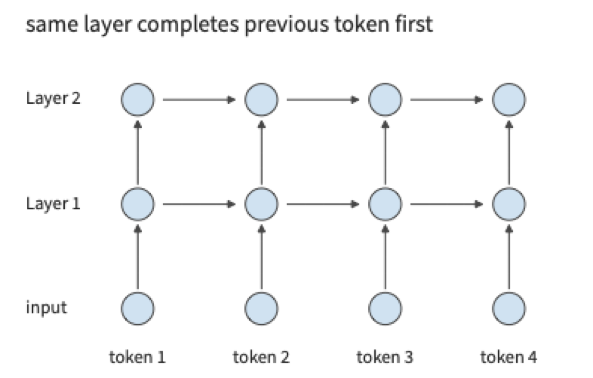
The Transformer uses an attention mechanism to let one token read information from other positions; "causal" means the current token position can only use information from itself and positions before it. The dependency structure of a causal Transformer is different. When computing a given position at layer \(l\), attention reads the representation of that position and all preceding token positions from the previous layer. As long as the input token is known and the corresponding representation from the previous layer is complete, computation at different positions within the same layer no longer needs to wait for the output of the preceding token in that layer. The causal mask specifies which information each token position is allowed to access, blocking information from later token positions. Arranged by query and queried token position, the mask forms a triangle; the mask restricts where information can come from, but it does not require executing all known tokens one at a time. The dependency along network depth still holds: the next layer uses the result of this layer.
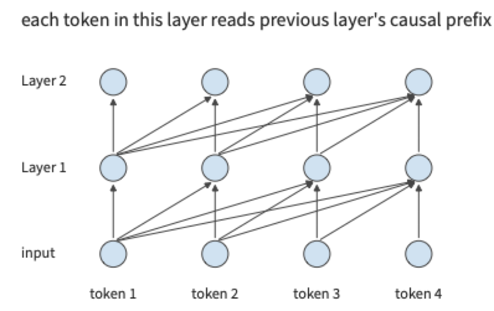
Tracing the arrows in the figure reveals two distinct kinds of waiting: an RNN waits for the previous token position within the same layer, while a causal Transformer waits for the needed result from the previous layer. Whether known inputs can be processed in parallel depends on these dependencies, not on the label "sequential." Generating a new token adds yet another dependency: the input to the next call is determined by this call's output.
Processing known inputs and generating step by step are two different kinds of work. An encoder converts known inputs into representations, while a decoder produces output step by step based on the information it is allowed to access. Modern causal language models commonly use a decoder-only structure; this chapter first builds its foundation on this structure, then discusses how V4.1 Flash re-partitions the work of input processing and generation through the CED architecture. When processing known inputs, token positions within the same layer can proceed in parallel; during generation, the next input can only be determined once the first output is fixed. Input processing therefore proceeds along network depth, while generation adds a further serial dependency across calls.11
Exercise 2-1 [Extension]: How do RNN and Transformer dependencies constrain parallel computation
For a sequence of four known input tokens, draw the computation dependency graphs for a three-layer RNN and a three-layer causal Transformer. Then add one output position to be generated, and identify which node must complete before that position can be computed. Assuming each layer's per-token computation takes one unit of time and parallel resources are unconstrained, find the longest dependency chain when processing all known inputs for each; explain which waits can be shortened by adding more compute units, and which cannot.
2.1.2 Model Configuration and Tensor Structure¶
Let's first expand a single computation node. Suppose this projection is applied to \(m\) input tokens, each represented by a vector with \(k\) features. Stacking these vectors row by row gives an input matrix \(X\) with \(m\) rows and \(k\) columns. Letting the output width be \(n\), we have:
Each output element is a dot product of length \(k\), and there are \(mn\) output elements in total, so
\(N_W\) is the number of weight parameters, and \(b_W\) is the number of bytes per parameter. Doubling the row count \(m\) doubles the computational complexity while leaving the weight size unchanged; doubling the output width \(n\) doubles both the weight count and the computational complexity. These two changes correspond, respectively, to "the same model processing more input" and "one layer of the model becoming wider." The model tables below can all be computed row by row using this rule.
Let's first look at a single data path in Qwen3-8B. A forward pass is the process of computing from input to output using the current weights; the hidden vector is the feature representation passed internally through the network, and its dimension is the number of values in each token's vector. A feedforward network (FFN) applies a feature transformation to each token independently; attention selects and aggregates information across tokens. These two kinds of operations alternate to form one layer of the network.
Qwen3-8B has \(L=36\) layers, hidden dimension \(d=4096\), and FFN intermediate dimension \(f=12288\); attention splits features into several groups and establishes token-to-token relationships separately within each group, with each group called a head. There are 32 query heads and 8 heads used for KV, each of dimension 128; Section 2.1.3 will explain them along the query, key, and value pathway. The vocabulary contains 151,936 tokens; the word embedding is a lookup table that maps a token ID to a vector, and the output head converts the final-layer vector into a score for each candidate token. Each keeps its own set of weights. Adding these per-layer parameters to the two vocabulary matrices gives the model a total of about 8.19 billion parameters.2
A forward pass starts from token IDs. The word embedding looks up a 4096-dimensional vector for each ID, and the vector passes through 36 layers of attention and FFN in sequence, before finally going through normalization and a vocabulary projection to produce logits — candidate token scores not yet converted into probabilities. Normalization keeps the layer-by-layer computed values within a suitable numerical range. The word embedding selects a row by ID, retrieving one vector per token, while the entire vocabulary table remains resident data queried by different tokens. The output head multiplies the hidden vector by the vocabulary matrix; when only generating the next token, usually only the logits for the last input token are needed.
Suppose \(B\) equal-length requests are processed simultaneously, each contributing \(P\) known tokens as this call's input. The input to the projections and FFN can be written as \(X\in\mathbb{R}^{BP\times4096}\), where each row is one token's representation at the current layer, giving \(m=BP\) rows in total. The keys and values of existing context tokens are read from the cache and are not counted in this \(m\). When each request contributes only one new token, \(m=B\). The first case tends to form a matrix with a large row count, while the second, at small batch sizes, is close to a matrix-vector product. The weights are the same, but the input shapes differ markedly.
Below we compare two input shapes: a single request processing 8192 input tokens in one call, versus a single request with 8192 existing context tokens processing one new token. Let \(B\) denote the number of requests, \(S\) the context length already accumulated before this call, \(P\) the length of this call's input, and \(d\) the hidden dimension. The former takes \(B=1,S=0,P=8192\), and the latter takes \(B=1,S=8192,P=1\).
| Configuration item | Qwen3-8B parameter | Direct impact on resource requirements |
|---|---|---|
| Layer count \(L\) | 36 | Repeated computation, per-layer state, and depth dependency |
| Hidden dimension \(d\) | 4096 | Sub-layer input/output and projection sizes |
| FFN intermediate dimension \(f\) | 12288 | Weights and computation of the three FFN matrices |
| \(Q\)/KV head count | 32/8 | Width of query vectors and context representations |
| Head dimension \(d_h\) | 128 | Dot-product and state width per head |
| Vocabulary size \(V\) | 151936 | Embedding and output head size |
Worked Example 2-1: Deriving per-layer parameter count and computational complexity from matrix sizes. In Qwen3-8B, the query and output projection widths are 4096, the key and value projection widths are 1024, and the FFN intermediate dimension is 12288. Find the parameter count of the four attention projections and three FFN matrices, and the computational complexity needed to complete these projections and FFN computation for \(m\) tokens of this call's input. Each token has a 4096-dimensional vector at this layer, forming one row of the input matrix; \(m\) counts the tokens actually participating in this computation. If the same vocabulary entry appears twice, it counts as two tokens. Given \(B\) equal-length requests, each processing \(P\) tokens this call, \(m=BP\). For example, a single request processing 128 input tokens gives \(m=128\); eight requests each advancing by one token gives \(m=8\).
Solution: The query and output projections each use a \(4096\times4096\) matrix, the key and value projections each use a \(4096\times1024\) matrix, and the three FFN matrices each have \(4096\times12288\) parameters. Therefore,
This does not yet use the context length: these projections apply the same transformation to each token's feature vector. The next section introduces the attention computation between queries and context, whose computational complexity relates to the number of query-key pairs. Separating these two kinds of work makes clear why "increasing the number of tokens participating in this call" and "letting each token read a longer context" carry different costs.
| Symbol | Meaning and scope |
|---|---|
| \(B,P,S\) | Number of requests, input tokens per request this call, existing context length |
| \(m=BP\) | Total number of tokens participating in projections this call, i.e., the number of input matrix rows; in ordinary decode \(P=1\), so \(m=B\) |
| \(d,f\) | Main hidden width, feedforward network intermediate width |
| \(n_Q,n_{\mathrm{KV}},d_h\) | Query head count, KV head count, dimension per head |
| \(N_{\mathrm{pair}}\) | Total number of effective causal query-key pairs across all requests per layer, excluding head count |
| \(t_e\) | Number of tokens routed to expert \(e\) (see Section 2.4); each token's feature vector occupies one row of that expert's input matrix; \(k_{\mathrm{top}}\) is the number of experts selected per token, and when tokens routed to an expert are not dropped during routing, \(\sum_e t_e=mk_{\mathrm{top}}\) |
| \(m_{\mathrm{out}}\) | Number of tokens for which the vocabulary projection is actually executed; when only the last token of each request predicts the next token, this equals \(B\), which does not equal the total generated output length |
To compute the resource requirements of the whole model, first compute the computational complexity of one call using each operation's matrix size in the table, then multiply by the number of layers of that type. The vocabulary head is computed separately based on the actual output token count \(m_{\mathrm{out}}\); when generating the next token, each request needs only the score for the last token. Normalization, activation, and lookup operations each have their own computation pattern, explained separately later along the data flow.
2.1.3 Attention Computation and Positional Encoding¶
Let's first trace the computation for a single token. The model produces three representations from this token's hidden vector: the query \(Q\) expresses "what information is needed right now"; the key \(K\) is used to compute a match score against queries; and the value \(V\) is the information aggregated into the output once selected. All three are produced from the same token's input via different weight matrices. Linear projection is exactly this kind of matrix multiplication: transforming input features into a different set of coordinates.
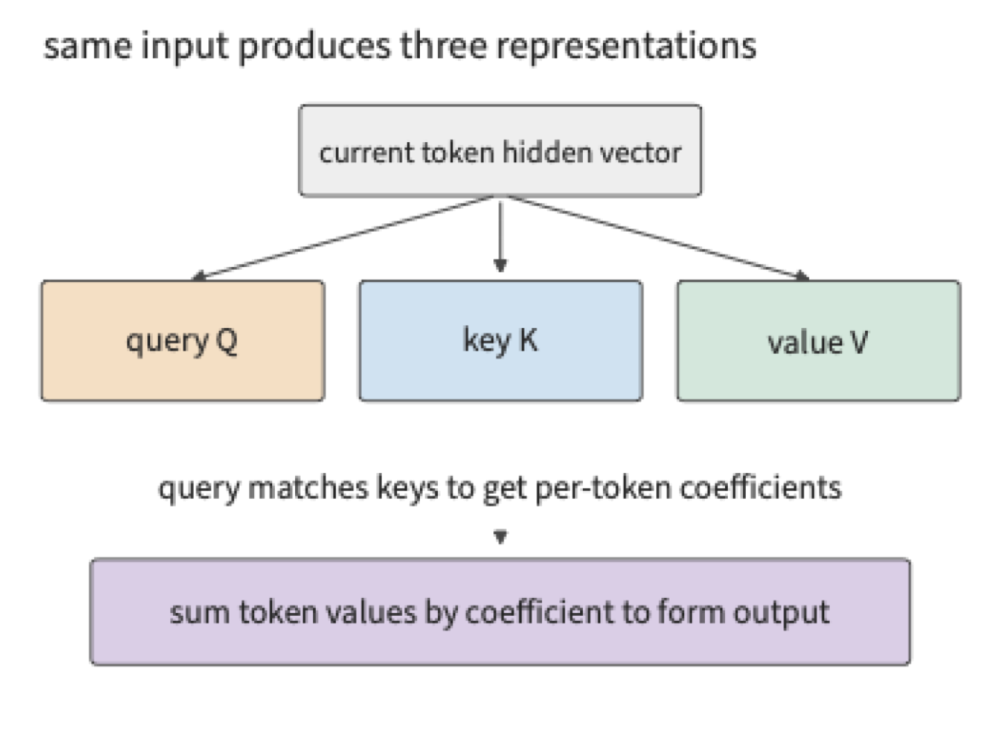
Using mathematical right-multiplication notation, the input \(X\) is multiplied by three weight matrices respectively, giving \(Q\), \(K\), \(V\). \(Q\)'s total width is \(32\times 128=4096\), while \(K\) and \(V\) each have a total width of \(8\times 128=1024\). Therefore \(W_q\) is \([4096,4096]\), and \(W_k\) and \(W_v\) are each \([4096,1024]\). Linear layers in code often store weights as \((d_{\mathrm{out}},d_{\mathrm{in}})\); after converting to mathematical right-multiplication notation, input width comes first and output width second, which lets us compare term by term against the table below.
The projections above produce \(Q\), \(K\), \(V\), but the current token position has not yet exchanged information with the context. Next, \(Q\) is split into 32 heads, and \(K\), \(V\) are split into 8 heads. Every four \(Q\) heads share one KV head. For one \(Q\) head, the query vector takes a dot product with the \(K\) of positions it is allowed to access, the dot product is divided by the square root of the head width to avoid the score's numerical scale growing excessively with head width, and then future token positions are masked. Softmax turns the scores \(s_j\) at allowed positions into positive, normalized values, with coefficient \(a_j=e^{s_j}/\sum_i e^{s_i}\); these coefficients sum to one and determine how much each context token contributes. The "attention weight" here refers to the coefficient computed from this call's input, distinct from model parameters saved after training. These weights are then used to compute a weighted sum over \(V\). The results from each \(Q\) head are concatenated and passed through a \([4096,4096]\) output projection \(W_o\) back into the hidden vector.
Writing the computation for one head in matrix notation:
\(A\) is each query's weights over context tokens, \(\mathcal M\) is the causal mask, and \(d_h\) is the head dimension. The dot product determines which positions are relevant to the current query, Softmax converts scores into weighting coefficients, and these coefficients then aggregate the value vectors. Before the dot product, Qwen3 also performs query and key normalization (QK Norm) and Rotary Position Embedding (RoPE): the former adjusts the numerical scale of queries and keys per head, and the latter, through a position-dependent rotation, makes the dot product carry relative positional information.
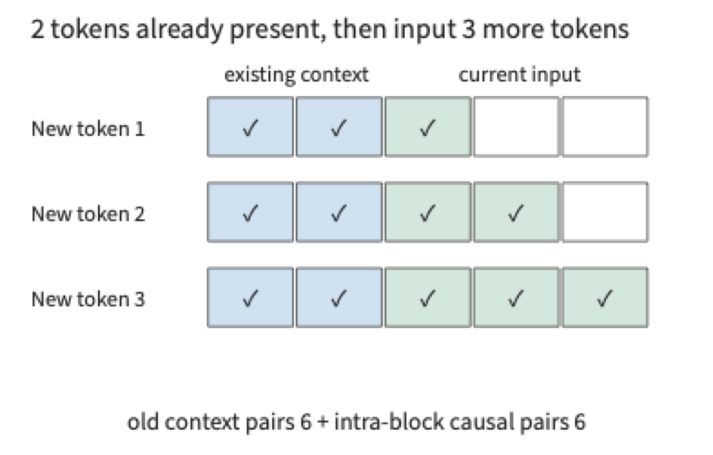
Now let's count the dot products. With \(P\) new input tokens and \(S\) existing context tokens, the \(i\)-th new token can access \(S+i\) tokens, for \(i=1,\ldots,P\). Summing over the number of context tokens each query can access gives a rectangle plus a triangle:
For each query-context token pair, one \(Q\) head's \(QK^{\mathsf T}\) dot product takes roughly \(2d_h\) FLOPs, and the subsequent contribution to \(AV\) takes another roughly \(2d_h\) FLOPs. Summed across all \(Q\) heads, the effective matrix computational complexity of \(QK^{\mathsf T}\) and \(AV\) is:
In prefill, where no context has yet been cached, doubling the sequence length turns the number of projection input rows into twice as many, while the number of full-attention query-key pairs becomes roughly four times as many, because the newly added tokens must also interact with the existing context. There are two common approaches to computing these query-key pairs: full rectangular matrix multiplication first produces all scores and then masks the upper triangle, while causal chunking skips the upper triangle entirely. Chunking can also fuse scoring, normalization, and \(V\) aggregation together, so scores are released from on-chip memory as soon as they are used. Chapter 5 will follow this data flow to explain how to reduce on-chip memory reads and writes for intermediate results.
Therefore, keeping \(BP\) fixed only keeps the number of projection rows fixed — it does not keep context interaction fixed. For example, splitting one long input into two independent short inputs eliminates the query-key pairs that originally crossed the boundary. Conversely, only adding context ahead of the same request increases the number of dot products for each new token, while the number of rows in the input projection stays unchanged.
2.1.4 Feedforward Networks and Forward Computational Complexity¶
Attention handles information exchange between tokens, while the FFN performs a nonlinear transformation on each token's features independently. SwiGLU is a gated feedforward structure: one branch transforms the input features, while another branch generates an element-wise modulation for it. SwiGLU uses the SiLU activation function \(\operatorname{SiLU}(x)=x/(1+e^{-x})\), applying a nonlinear transformation to change how features combine. Qwen3-8B uses this structure: the input passes through two up-projecting branches, gate and up; the gate branch passes through SiLU and is then multiplied element-wise with the up branch, and finally a down projection brings it back to the hidden dimension:
Here \(\odot\) denotes element-wise multiplication; gate is the gating branch, up is the up-projecting branch, and down is the down-projecting branch. The intermediate vectors produced by all three are called activations. gate and up each raise every row from \(d\) dimensions to \(f\) dimensions, and down brings it back down to \(d\) dimensions. The three matrices together thus have \(3df\) parameters, and processing the feature vectors of \(m\) tokens requires \(6mdf\) FLOPs. Qwen3-8B takes \(d=4096,f=12288\); the FFN has about 151 million parameters, and its BF16 weights occupy 288 MiB. The wider activations after the up-projection also need temporary space, but only for the duration of that computation.
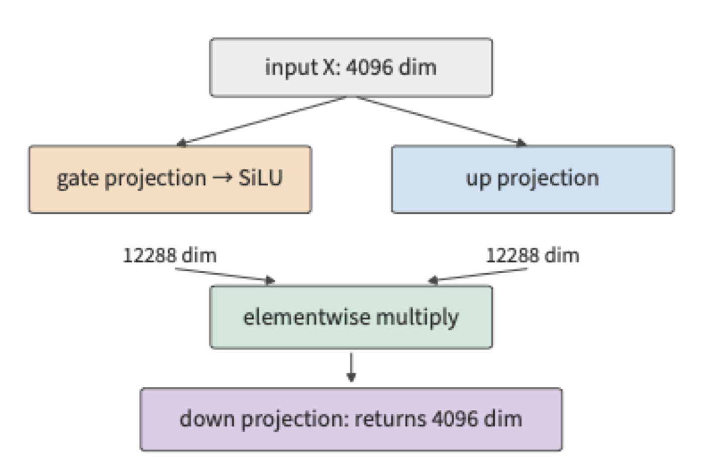
Comparing the two kinds of projections: the attention QKV and output projections together have about 41.94 million parameters. Adding the FFN's roughly 151 million parameters, the FFN accounts for about 78% of these main projection parameters, so in short-context computation the three FFN matrices take up a substantial share. As the input grows longer, the FFN's computational complexity grows linearly with token count, while the computational complexity of full attention grows with \(P(P+1)/2\). The two grow at different rates, so the share of computation across these components shifts as context length changes.
Beyond matrix transformations, there are also connections between sub-layers within a layer. A residual connection retains the sub-layer's input and, after the sub-layer's transformation is complete, adds it element-wise to the output. One path thus performs a new transformation, while the other directly carries forward the existing representation. Below, we assemble attention, feedforward, and the two residual connections into a complete layer.
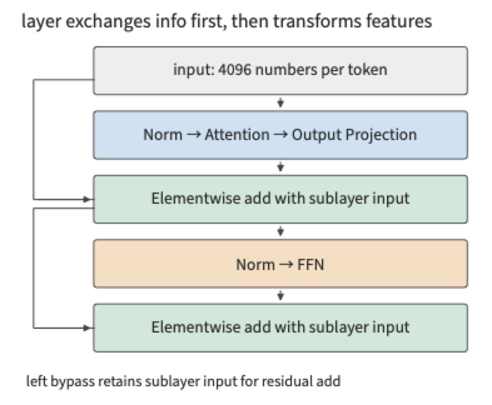
Table 2-1 Per-layer modules and output interface of Qwen3-8B
The attention and feedforward rows are each accumulated over the 36 main layers; the word embedding reads the corresponding row from the vocabulary table based on token ID, and is not computed as a vocabulary matrix multiplication (GEMM, general matrix multiplication). Attention's \(K\) and \(V\) each have only 1024 dimensions, while the query still has 4096.
Model entry
| Module and role | Input → output (rows × width) | Weight matrix (input width × output width) | Matrix FLOPs | Layers/calls |
|---|---|---|---|---|
| Word embedding row lookup | \(m\) IDs → \(m\times4096\) | Lookup table \(151936\times4096\) | 0; row-access counted separately | 1 |
Attention
| Module and role | Input → output (rows × width) | Weight matrix (input width × output width) | Matrix FLOPs | Layers/calls |
|---|---|---|---|---|
| \(Q\) projection: forms the query | \(m\times4096\to m\times4096\) | \(4096\times4096\) | \(2\times m\times4096\times4096\) | 36 |
| \(K\), \(V\) projections: form reusable context | \(m\times4096\to m\times1024\) | \(4096\times1024\), 2 total | \(2\times 2\times m\times4096\times1024\) | 36 |
| \(QK^{\mathsf T}\) and \(AV\): content-based context aggregation | \(32\) query heads, each \(128\) dimensions | No new projection weights | \(4\times32\times128\times N_{\mathrm{pair}}\) | 36 |
| Output projection: merges the heads | \(m\times4096\to m\times4096\) | \(4096\times4096\) | \(2\times m\times4096\times4096\) | 36 |
Feedforward and connections
| Module and role | Input → output (rows × width) | Weight matrix (input width × output width) | Matrix FLOPs | Layers/calls |
|---|---|---|---|---|
| SwiGLU: per-token feature transformation | \(m\times4096\to m\times12288\to m\times4096\) | Two \(4096\times12288\); one \(12288\times4096\) | \(6\times m\times4096\times12288\) | 36 |
| Normalization, RoPE, activation, and residuals | Preserves or applies element-wise transformations to the above tensors | Normalization vectors, etc. | Computed per element | 36 |
Output interface
| Module and role | Input → output (rows × width) | Weight matrix (input width × output width) | Matrix FLOPs | Layers/calls |
|---|---|---|---|---|
| Vocabulary head: converts to token scores (once, at the end of the whole model) | \(m_{\mathrm{out}}\times4096\to m_{\mathrm{out}}\times151936\) | \(4096\times151936\) | \(2\times m_{\mathrm{out}}\times4096\times151936\) | 1 |
The table shows two kinds of growth: the work of projections and FFN grows with \(m\), while context interaction grows with \(N_{\mathrm{pair}}\). The FFN's three large projections explain why it takes up a large share of computation in short contexts; as context grows longer, the share taken by context interaction gradually increases.
Adding each layer's linear transformations and context interaction, then adding the vocabulary head, gives the main matrix computational complexity of Qwen3-8B:
The first term grows with input row count, the second grows with the number of query-key pairs, and the last grows with the number of tokens actually undergoing the vocabulary projection. For an input containing 8192 tokens, with attention computed over effective causal query-key pairs and the vocabulary head processing only the last token, the total is 133.6 TFLOPs; for 8192 existing context tokens with one additional token, the total is 20.0 GFLOPs.12
Prefill processes 8192 input tokens simultaneously, and every token goes through projections and the FFN. Decode executes these operations only for the new token, while old tokens' \(K\), \(V\) are read from the cache. The cache thus eliminates recomputing the projections and FFN for old tokens, but the attention computation between the current query and the context still has to run. The next section computes the capacity and access volume of this cache.
Exercise 2-2 [Core]: Same input row count, why does the attention computational complexity differ
Using Table 2-1, take \(B=4,S=4096,P=1024\) and compute the FLOPs for the projections and FFN, for effective causal attention, and for the vocabulary projection applied to the last token of each sequence. Keeping \(BP=4096\) fixed, change to \(B=1,S=4096,P=4096\); first predict which terms stay the same, then compute the differences. Finally, taking a single request with 8K input as an example, compare fully processing the input against reusing a prefix. When reusing, retain the KV of the first 6144 tokens and process only the newly added 2048 tokens. Find what fraction of matrix computational complexity the latter approach saves relative to fully processing the input.
2.2 Resource Consumption in Autoregressive Generation¶
To compute the resources needed to generate a complete response, we need not only the operations in a single forward pass but also how many times the model is invoked and how long state is retained. The same set of weights may be used hundreds of times within a single request, while the KV cache is read and grows at the same time. The final number of bytes stored can therefore differ from the cumulative number of bytes accessed by several orders of magnitude.
2.2.1 Prefill, Decode, and State Reuse¶
During prefill, the model receives a segment of known input and can compute the representations of multiple tokens at once. After the logits of the last input token select the first output token, the model enters the decode stage: the next call feeds that token back in as new input, produces the next output, and extends the sequence step by step. Both stages use the same model, but the former has multiple known input tokens, while the latter, in ordinary serial generation, adds only one token per request per call.
If the entire prefix were resubmitted to the model every time a token is generated, the projections and feedforward network computations for old tokens would be repeated. In a causal model, old tokens cannot see tokens added later; as long as the weights, token position indices, and the relevant computation conditions stay unchanged, the \(K\), \(V\) produced by old tokens can be retained. Subsequent queries read these context \(K\), \(V\) values and append the new \(K\), \(V\) for the current token position, avoiding the bulk of the recomputation for old tokens.
Caching turns "recomputing the representation of old tokens" into "storing and accessing the state of old tokens." Future token positions will produce their own \(Q\), use it to score the \(K\) of old tokens, and then aggregate \(V\) according to the resulting weights — so what is retained long-term is \(K\) and \(V\). Old queries have already completed their task; the next step uses a new query. Chapter 8 discusses further how to share this state across different requests.
Qwen3-8B's BF16 KV cache occupies, per context token:
The initial 2 accounts for key and value respectively; each of the \(L\) layers stores \(n_{\mathrm{KV}}\) groups of vectors of width \(d_h\), with each element occupying \(b_{\mathrm{KV}}\) bytes. Storing \(H\) context tokens therefore requires \(M_{\mathrm{KV}}=c_{\mathrm{KV}}H\). Qwen3-8B's \(H=8192\) corresponds to 1.125 GiB, and processing one more input token adds another 144 KiB. Halving the number of layers or KV heads halves the growth rate as well; as batch size increases, each independent request adds its own separate context.14
2.2.2 Memory Footprint and Data Access Volume¶
The KV cache stores already-computed results, avoiding repeated computation in subsequent generation. To analyze the computation saved against the added storage overhead, we divide data into three categories by purpose and lifecycle: weights, context state, and temporary data.
| Data Category | Storage and Reuse | Main Items Computed in This Chapter |
|---|---|---|
| Weights | Usually stay unchanged across many calls | Resident bytes, the set of weights accessed, within-batch reuse |
| Context state | Retained per request, continually appended or updated | Actual capacity occupied, per-step read/write volume, and computation required for updates |
| Temporary data | Produced within the corresponding operator or stage, released after use | Tensor size, data volume passing through the corresponding storage interface, portions that must be kept simultaneously |
First, weights. All of Qwen3-8B's BF16 weights occupy about 16.38 GB, i.e., 15.26 GiB. Once the model is loaded, this data is used repeatedly by multiple requests. Within a single forward pass, the embedding layer looks up rows by token ID, the layer-internal projections and FFN use their corresponding matrices, and the final vocabulary head computes output scores. So which weights are accessed is determined by the specific operations in the computation graph.
For a matrix multiplication of \([m,d]\times[d,f]\), every row of input uses the same weight matrix. Once a block of weights is loaded into on-chip storage, it can be used sequentially for multiple rows of input, letting a single read participate in more multiply-accumulate operations. As the number of processed rows \(m\) increases, the computation grows accordingly, while the capacity of the whole matrix stays fixed. Chapter 5 explains further how on-chip capacity and tiling determine how many times a set of weights can be reused.
Context state was computed in Section 2.2.1; how much memory temporary data occupies depends on which tensors exist simultaneously. After one layer releases its buffers, the next layer can reuse the same space; operator fusion (combining several adjacent operations into a single executed program) can also keep some intermediate values only in registers or on-chip storage. So when computing read/write volume, we must count every access; when computing the memory peak, we must identify which tensors still need to be kept at the same instant. Chapter 5 analyzes this further with concrete programs.
Storage volume depends on which data must be retained at a given moment, while access volume depends on how many times data is read and written during execution. For example, if one decode step reads the entire old context once, the logical read volume is \(c_{\mathrm{KV}}H\); running multiple steps in sequence accumulates this progressively. Only after determining which storage tier these accesses actually pass through can we divide the corresponding \(R\) by that interface's bandwidth.
Worked Example 2-2: As batch size grows, when does context read volume exceed weight read volume? For Qwen3-8B, each batch reads the required shared weights once, amounting to about 15.14 GB of data, with embedding row lookups counted separately per request. Each request's 8K BF16 context is 1.125 GiB, assuming independent requests each read their own old context once.
Solution: Let the per-batch shared weight read volume be \(R_W\); since each request's context is independent, context read volume is \(Bc_{\mathrm{KV}}H\). Setting the two equal:
Substituting \(R_W=15{,}136{,}811{,}008\) bytes and \(c_{\mathrm{KV}}=147456\) bytes, the minimum integer batch size is 13 when \(H=8192\), and 51 when \(H=2048\). Shortening the context length to a quarter of its original value roughly quadruples the number of requests needed for context read volume to exceed weight read volume. The longer the context, the sooner the benefit of within-batch weight reuse hits a limit, because every additional request adds another independent context read.13
Following the data path from Chapter 1, loading moves weights from storage to GPU memory, and execution then moves the required weights to the compute unit. KV and inter-layer activations can also be stored and used within the accelerator. The same logical access can therefore stay on-chip, pass through HBM, or transfer across accelerators; Chapter 4 analyzes the storage capacity and transmission bandwidth of each path separately.
2.2.3 Computation and State Read/Write Volume for a Complete Response¶
A complete response executes many steps repeatedly, and the same context is read many times over the course of it. Consider a single ordinary serial-generation request: \(B=1\), a recovered prefix of length \(S\), \(P\ge1\) tokens in the current input, and a final return of \(G\ge1\) tokens. Let \(H=S+P\). Prefill processes the new input and produces the first output, followed by \(n_d=G-1\) decode calls. The last returned token has not yet been fed back into the model, so its KV is not automatically saved at the end of the request.
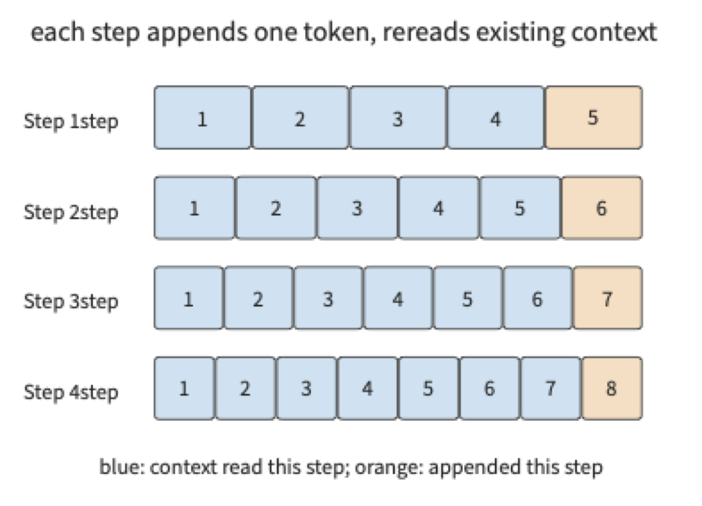
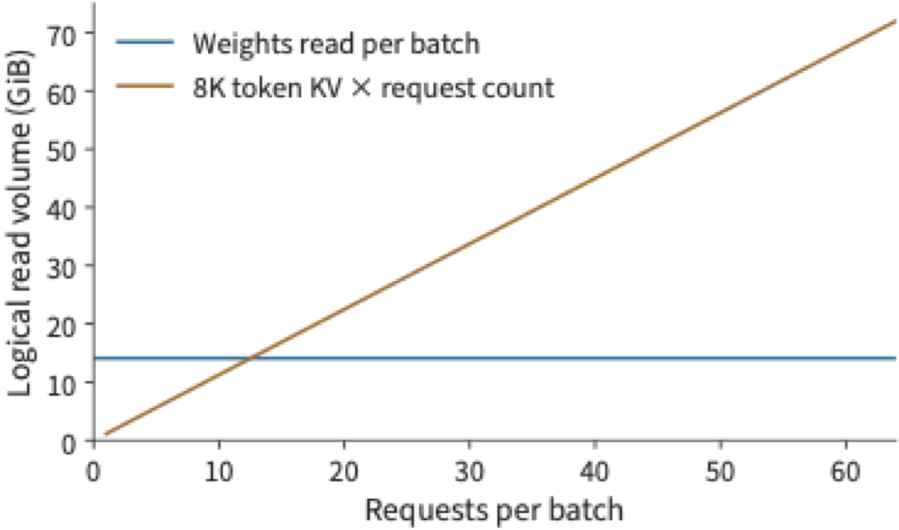
Each row in Figure 2-7 has one more filled square than the row above it: a position appended earlier now also becomes part of the context. Before executing the \(j\)-th decode step (with \(j\) starting from 0), the context length is \(H+j\). So if each decode step reads through the entire prior context once, the cumulative read volume is:
The new state size added by decode is \(c_{\mathrm{KV}}n_d\); if the entire context is retained, the final effective KV is \(c_{\mathrm{KV}}(H+n_d)\). The total new KV for this request should also include the \(c_{\mathrm{KV}}P\) written by prefill. Recovery and transfer of an existing prefix are accounted for separately. Each term in the summation corresponds to the context already present at the start of a decode step: positions that appear earlier participate in more subsequent queries, and positions that appear later participate in fewer.
Worked Example 2-3: Why does the cumulative KV read volume from step-by-step generation far exceed the storage volume? Find the size of the KV stored at the end of the request, and the total volume of existing KV read during generation.
Solution: Take \(S=0\), \(P=8192\), \(G=1025\), so \(n_d=1024\); over the entire process, the cumulative reads of context tokens' KV reach 8,912,384. Each token's KV occupies 144 KiB, so the cumulative read volume is about 1224 GiB. During generation only 144 MiB of KV is newly added, and about 1.27 GiB is stored in total at the end. The cumulative read volume is nearly a thousand times the final storage volume, because every token already in the context gets read again by every subsequent decode step; in this example, the vast majority of the context is the 8192 input tokens written by prefill.
This set of calls also determines the total computation volume. Linear projections and the FFN process one row per decode call, while context interaction grows with \(H+j\). Let the fixed matrix computation per step be \(F_0\), and the computation required to interact with each context token be \(a\); then
As the output length varies, the cumulative work from the fixed per-step portion grows linearly with \(n_d\), while the portion added by the growing context during generation causes part of the cumulative computation to grow with the square of the number of generation steps. Returning a single token corresponds to \(G=1\), \(n_d=0\), with only prefill executed; this special case also illustrates why a complete response includes \(G-1\) subsequent decode steps.
Figure 2-7 accumulates reads along the number of generation steps, while Figure 2-8 accumulates reads along the number of requests. For multiple independent requests, state capacity and context access add up separately per request, while weights within a batch are shared. When lengths differ, substitute each request's own \(H\) and \(n_d\): the longer the output, the more times the existing context gets read; the longer the input, the more context the first decode step must access. For real conversations, one can first reconstruct this chain of calls from the input length of each turn, the cache-hit situation, and the number of returned tokens; Known-Prefill Sealed Chat Accounting gives the detailed substitution process.
Exercise 2-3 [Extension]: How do KV capacity and cumulative read volume grow as output length varies?
Using Qwen3-8B with \(B=1,S=0,P=8192\), return \(G=513\) and \(G=1025\) tokens respectively. Find the number of subsequent decode steps, the final KV size, and the cumulative read volume of the old context. Explain why, as the number of outputs nearly doubles, the new KV capacity added during generation, the final total KV capacity, and the cumulative read volume grow at different rates. Then halve the KV bit width and identify which of the three quantities is halved as a result.
2.3 Context State Representation and Access Mechanisms¶
As the model continues generating, it needs to make use of content it has already read. Consider two ways of keeping records: one leaves a record on every page and retrieves whichever page is needed; the other keeps only a single fixed-length summary, rewriting it every time new content is read. The first grows with history; the second stays fixed in size but cannot guarantee recovering every detail of every token.
Mapped onto the model, one class of mechanism stores keys and values for every token position, while finite state recurrence folds historical contributions into a fixed-size state. Both per-token records and recurrent summaries are stored as numerical vectors or matrices. These representations, saved after the model processes context and reused in subsequent computation, are called context state. Context length is measured in number of tokens, while state capacity is measured in the actual number of bytes stored.
When comparing these mechanisms, first look at what history leaves behind, then look at how the next step obtains the information it needs: one can represent each token with fewer dimensions, or access only recent positions directly, aggregate multiple positions into fewer entries, or filter before reading. Another class of mechanism continuously updates a fixed-size state, from which queries obtain their results. These arrangements change representation width, entry count, and access method respectively; the storage and reads saved must be weighed against the added work of selection, compression, and updating.
2.3.1 Multi-Head Attention and KV Sharing¶
The most direct way to save on per-token records is to reduce the number of \(K\), \(V\) copies stored per token. Multi-head attention lets different query heads learn different relationships within the context separately. In multi-head attention (MHA), each \(Q\) head has its own \(K\), \(V\) head; multi-query attention (MQA) has all \(Q\) heads share a single set of \(K\), \(V\); grouped-query attention (GQA) groups \(Q\) heads, with each group sharing one set of \(K\), \(V\). After sharing, the number of \(K\), \(V\) groups that must be stored per context token decreases, while the number of context tokens stays unchanged.
Take a single layer with only four query heads as an example. MHA stores one set of \(K\), \(V\) for each of the four query heads; GQA might have the first two query heads share one set of \(K\), \(V\), and the last two share a second set; MQA has all four query heads share a single set. With the same context length and head width, the number of KV sets that must be stored is four, two, and one respectively. So in this example, GQA halves the context storage volume. All four query heads can still produce four different sets of scores over the same context — this is exactly the distinction between "sharing the context representation" and "merging queries."
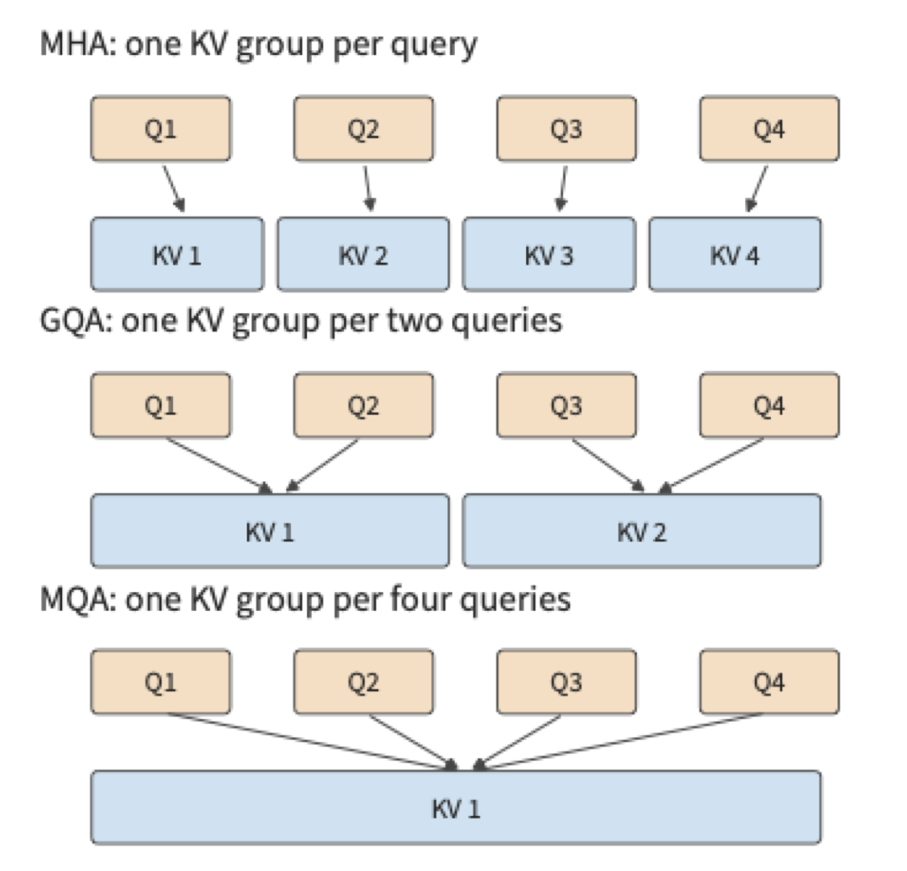
Qwen3-8B adopts this sharing scheme, having every four query heads share one set of KV, for a total of 32 query heads and 8 KV heads. If each query head stored KV separately, the capacity would be four times the current configuration; if all queries shared a single set, it would be one-eighth. This actual GQA configuration needs 1.125 GiB to store 8192 tokens. The capacity figure at the end of this section fixes context length and head width while varying only the number of KV groups, so the ratio of bar heights directly displays the sharing ratio.
Sharing \(K\), \(V\) changes the data being queried, but the 32 \(Q\) heads still compute scores and weighted outputs separately. So KV projection and storage volume decrease with the number of groups, while the \(QK^{\mathsf T}\) and \(AV\) interactions still accumulate by the number of query heads. A single read of \(K\), \(V\) can also serve multiple query heads in the same group, so the actual computation reuses the same data.
We can predict resource changes directly from the number of groups. Halving \(n_{\mathrm{KV}}\) halves both the key-value projection parameters and the context state capacity; the number of query heads \(n_Q\) stays unchanged, so the computation for query-context interaction still accumulates by the original number of heads.
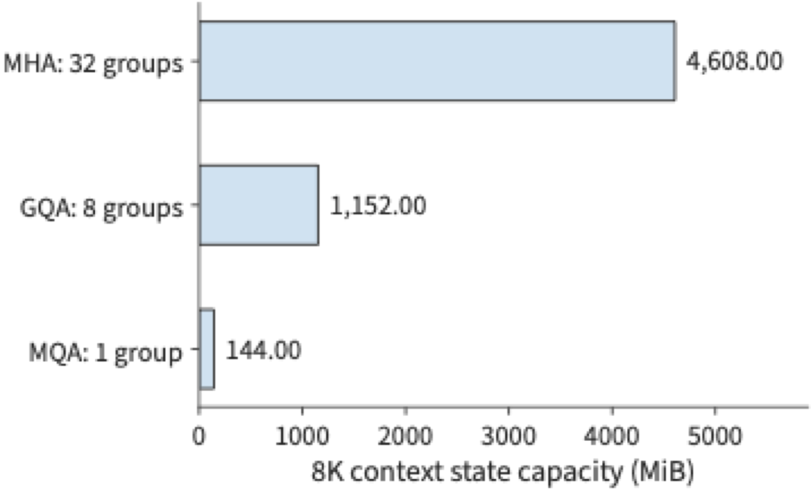
KV sharing also illustrates how infrastructure constraints influence model design. The original MQA paper cites the memory bandwidth overhead of incremental inference directly as its motivation; GQA seeks a compromise between the quality of MHA and the speed of MQA.27 Reducing the number of KV heads changes both the attention relationships the model can express and the state the serving side must store and read.
2.3.2 Latent Compression and the MLA Execution Path¶
GQA and MQA save space by reducing the number of KV groups, while multi-head latent attention (MLA) saves space by lowering the dimensionality of the context representation. The input can first be projected into a low-dimensional latent \(c\), and then up-projected to obtain the \(K\), \(V\) used for attention. The model learns these low-dimensional representations and up-projections during training, and at generation time stores context in the form of \(c\).
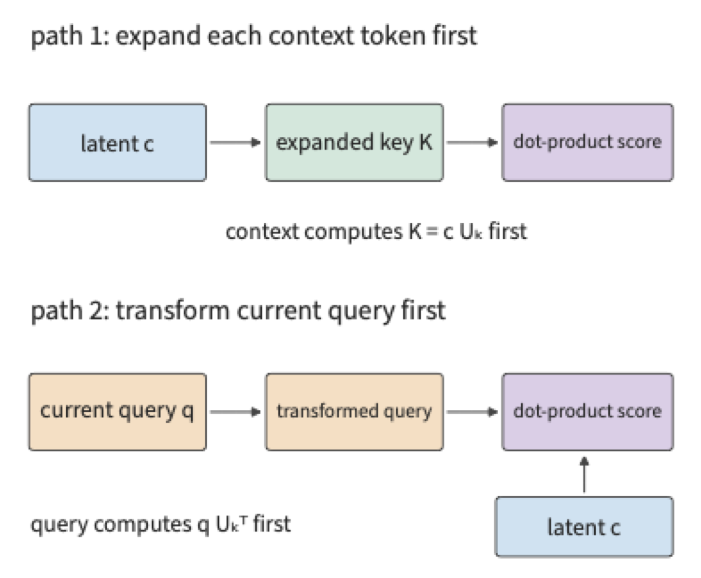
The rationale for storing only the latent is as follows. Let the up-projection of keys be \(U_k\), let context latents form matrix \(c\) by rows, and let the expanded keys be \(K=cU_k\). The associativity of matrix multiplication gives
The left side first recovers the key for each context token; the right side first transforms the current query. For a single new query, the right side only needs one query transformation, after which it dot-products directly against the latents. Value vectors can similarly be up-projected after the weighted aggregation: aggregate the low-dimensional vectors first, then restore the output dimension. In this way, the up-projection originally performed for every context token is instead performed for the current query and the aggregated result.
This chapter uses Kimi K3's Gated MLA (Gated Multi-head Latent Attention) as a worked example; the gate uses a learned coefficient to modulate the attention output. The compact path stores a 512-dimensional latent along with an additional 64-dimensional branch that participates in the \(QK^{\mathsf T}\) dot product. All of Kimi K3's MLA layers use NoPE (No Position Encoding) — queries and keys receive no RoPE, and positional information is instead provided by the recurrent gating and decay of the KDA layers (Section 2.3.4); the reference implementation still projects and caches this 64-dimensional branch, just without rotating it, so each token stores \(512+64\) dimensions. With 24 MLA layers, an 8192-token context, and BF16, the storage volume is \(24\times8192\times(512+64)\times2\), i.e., 216 MiB.
The expanded cache first restores the latent into per-head \(K\), \(V\), and then stores these vectors; the same 8192 tokens require about 11.25 GiB. The compact cache instead stores the latent prior to up-projection. The capacity difference between the two therefore comes from which side of the linear transformation the cache sits on: the compact cache transforms the current query at every step, while the expanded cache reads each head's context vectors directly.3
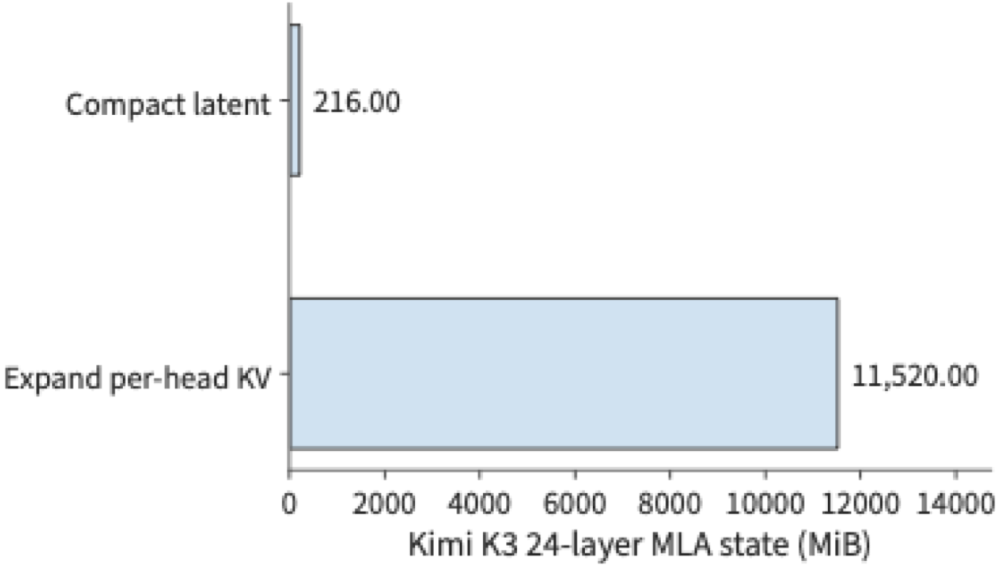
This transformation reduces the representation width per context token, but a latent vector must still be stored for every token. So storage volume and dot-product computation still grow with context length. The longer the context, the more read volume the compact representation saves; the shorter the context, the higher the relative overhead of the query transformation itself.
2.3.3 Local Windows, Context Compression, and Sparse Indexing¶
Suppose the model has already read a long stretch of text and now must process a new token. The model can read the most recent span of positions directly, or read entries formed by aggregating multiple old tokens, or first find the entries relevant to the current query and then read the main attention state of just those entries. These three actions give rise, respectively, to local windows, context compression, and sparse selection. All three can be combined, but must be measured separately: the window limits the recent range, compression reduces the number of long-term entries, and indexing selects which entries to read at the current step. Filtering itself also requires reading index representations and computing scores — one cannot count only the main attention state of the entries finally selected.
Let us first distinguish three objects. Sliding-Window Attention (SWA) reads the most recent span of positions directly; with a window length of 128, earlier positions fall out of this local window. Global main KV is the long-term representation read by main attention, potentially already merging multiple positions; "global" indicates it covers a longer history, not that every read touches all entries. Index K is a separate, smaller representation used for retrieval: the indexer uses it to score entries first, and then the main attention reads the selected main KV. Index scores are used to select cache entries; the main attention separately uses its own query to compute the final aggregation weights.
The model learns through training to summarize a span of input into a shared representation. A single 512-dimensional main KV record doubles as both key and value in attention, shared by multiple query heads, with capacity counted per record. SWA stores recent detail, while the global branch provides earlier information, and the current query uses both together.
DeepSeek V4-Flash combines this set of mechanisms in a single model, with 43 backbone layers, 4096 hidden dimensions, and 64 attention heads, each of dimension 512. \(Q\) is first projected from 4096 dimensions down to 1024 dimensions, and then expanded into a \(64\times 512\)-dimensional query; the shared KV is projected from 4096 dimensions down to 512. Output uses a low-rank projection split into 8 groups — that is, it first projects to a narrower intermediate dimension and then to the target dimension. The input and output dimensions of each projection determine the corresponding matrix shapes.
DeepSeek V4-Flash uses two kinds of compressed attention: Compressed Sparse Attention (CSA) first compresses the context and then selects relevant entries via an index; Heavily Compressed Attention (HCA) merges more positions into fewer, coarser-grained entries for queries to access. Both are used to reduce the storage and access volume for long context; they differ in degree of compression and whether entries are further filtered. Its backbone consists of 2 pure window layers, 21 CSA layers, and 20 HCA layers, with a window length of 128. CSA stores context at a compression ratio of 4 and maintains an index; HCA stores a coarser context at a compression ratio of 128. Using BF16 as the reference storage format, each completed compressed entry in CSA holds a 512-dimensional main attention state, plus a separate 128-dimensional index entry. With \(S\) tokens already present, the number of completed entries is computed as \(\lfloor S/4\rfloor\); blocks not yet completed still need their own separate buffer.
Compression ratio describes the number of output entries, and does not necessarily equal the full input span covered by one entry. V4's CSA generates one record for every four new tokens, but uses overlapping adjacent blocks: apart from boundary handling for the first block, each entry aggregates information from eight tokens across two adjacent blocks using two different sets of projections; each token additionally uses a learned per-channel weight. HCA generates one record for every 128 tokens, does not use this adjacent-block overlap, and does not use top-k indexing (taking only the k entries with the highest index scores) — instead it reads all completed coarse-grained entries. Only V4.1's CSA2 (the second version of CSA) removes the overlapping compression used in V4's CSA.
A single CSA query's main attention reads at most the window plus 512 compressed entries, but index scoring still scans all stored compressed index entries. At \(S=8192\), one CSA layer retains 2048 compressed entries: main attention state is about 2 MiB, the index is about 0.5 MiB, and the window is about 0.125 MiB; the compressed entries selected by main attention total at most about 0.5 MiB, yet index scanning still must process all 2048 index entries. HCA, meanwhile, has 64 completed entries, with a main attention state of about 0.0625 MiB, and accesses the window state plus this set of coarse-grained compressed entries.
Summing across all 43 layers, using the BF16 reference format above, at an 8192-token context the window, compressed context, and index together total 59.125 MiB; there is also about 11.641 MiB of FP32 compressor buffer, for a combined total of about 70.8 MiB. The main attention (including window) plus index reads for the last query together total 27.625 MiB. The State Breakdown itemizes these figures, making clear what the number of selected entries, the stored state size, and the per-step read volume each represent.
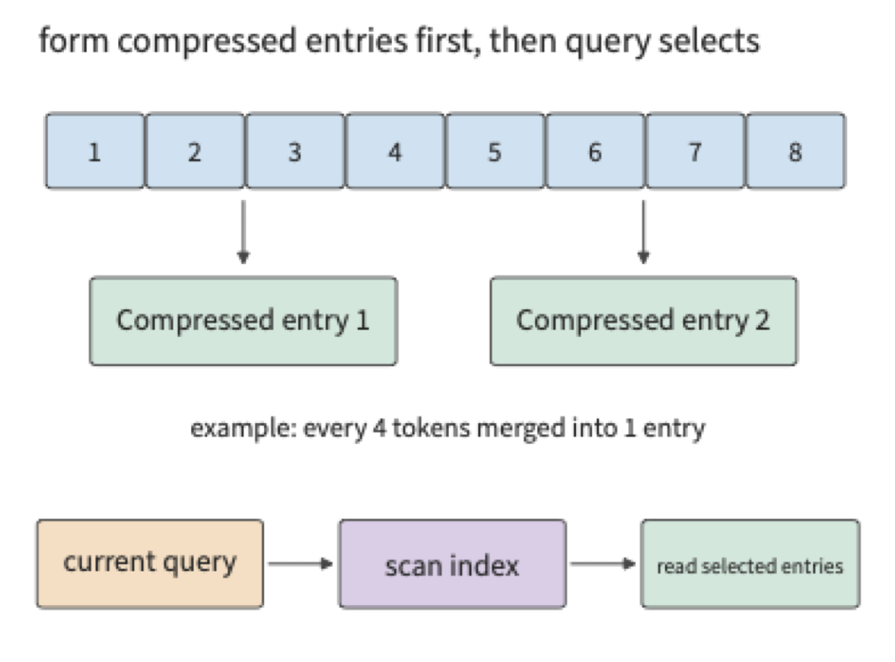
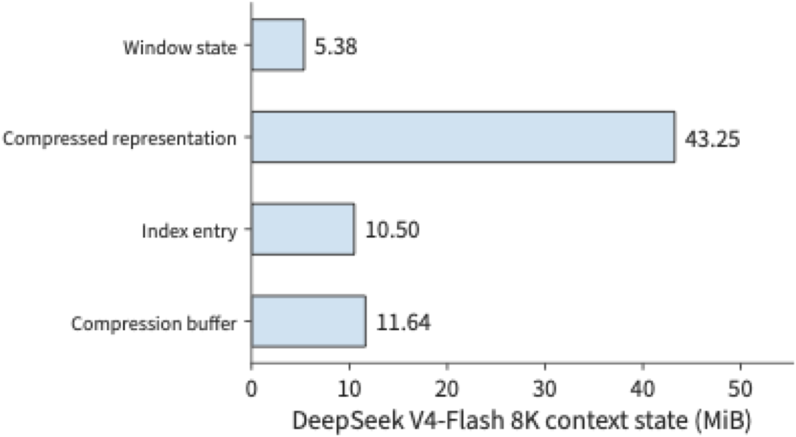
Compression also introduces an update rhythm different from that of a query. When a new token arrives, the current compression block is updated first; once the number of accumulated tokens reaches the compression ratio, a long-term entry is generated. CSA completes a block every four tokens, HCA every 128 tokens. So while processing the same input token, how many entries main attention accesses, how many entries the index scans, and whether a compressor block completes must each be computed separately. When processing the 128th token, both types of compression block may complete simultaneously.15
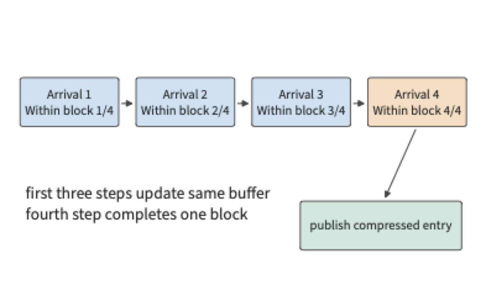
Exercise 2-4 [Extension]: How do KV head sharing and context compression change storage and access volume
First change Qwen3-8B's number of KV heads from 8 to 4, keeping the 32 query heads unchanged, and compute the change in KV capacity, KV projection parameter count, and the computation required for query-context interaction. Then, for DeepSeek V4-Flash's CSA layers, increase the context from 8192 to 16384, and with a compression ratio of 4 and at most 512 compressed entries selected per query, compute the number of stored entries, the number of index entries scanned, and the upper bound on selected entries. Explain why these three quantities do not grow at the same rate.
2.3.4 Linear Attention and Finite State Recurrence¶
The mechanisms in Sections 2.3.1 through 2.3.3 can still distinguish among the individual context entries that get saved. Finite state recurrence takes a different approach: each time a new token arrives, its contribution is merged into the existing state, and the current query uses the updated state directly; the next step continues to overwrite this state. This corresponds to the picture, introduced at the start of Section 2.3, of continually rewriting a fixed-length summary. This class of linear attention reorganizes the order of computation for queries, keys, and values, no longer explicitly computing attention scores for every query-key pair. When the feature dimension is fixed, the state matrix size stays constant, and the computation for processing an entire sequence grows linearly with sequence length.
The basic operation for constructing state is the outer product: multiplying each pair of elements from a key vector and a value vector to form a two-dimensional association table. Consider the matrix \(\mathcal S_t\) obtained by accumulating key-value outer products. When each new token arrives, the old state is read first, then the current position's contribution is written; the current query reads its output directly from the state matrix:
If the key width is \(d_k\) and the value width is \(d_v\), the state always has \(d_kd_v\) elements. A new token changes the matrix's contents, not its size. The per-token context list thus becomes a set of accumulated key-value associations; queries retrieve their output from this set of associations.
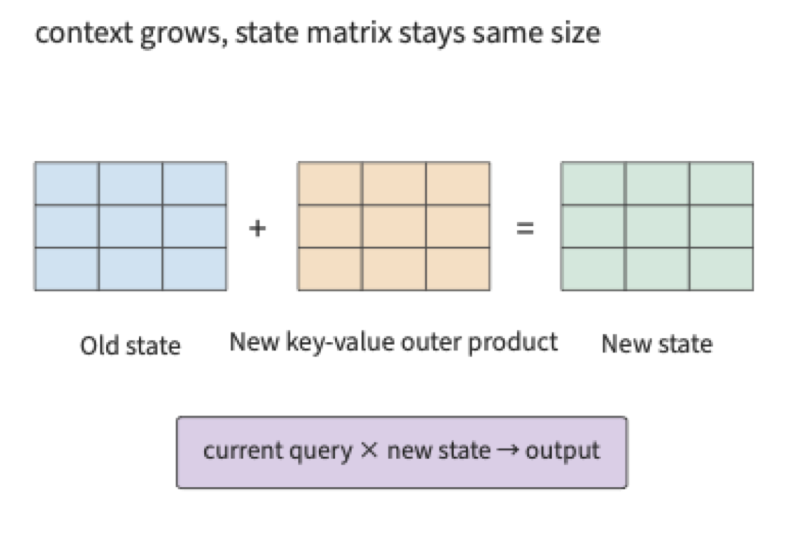
Actual recurrent attention adds gating and correction on top of simple accumulation. Kimi Delta Attention (KDA) is a gated recurrent attention mechanism used by Kimi that preserves context information in a fixed-size association matrix. KDA uses gating together with a delta update; here, delta refers to a correction written based on the current prediction error. Each update not only writes new information but also uses the current key to test the existing state's prediction, writing a correction accordingly; old information is retained in the form of an aggregated association, the current key determines where the correction lands, and a decay gate determines how much old information is retained. KDA updates a fixed-size association matrix rather than appending entries to a list saved per token.
Each KDA layer in Kimi K3 has 96 heads, each with a \(128\times128\) recurrent matrix. Saved in FP32, a single layer takes 6 MiB, and all 69 layers take 414 MiB. A single decode step reads the old matrix, fuses in new information, and writes it back; in the ideal case, the combined read-write volume is 828 MiB. This read-write volume does not grow with context length: for short contexts it represents a significant fixed overhead, while for long contexts it avoids the scan volume that would otherwise keep growing with the number of context tokens.
Prefill and decode also differ in implementation. Decode uses single-step recurrence; a known span of input can instead be computed in parallel using a block-wise algorithm, passing state between blocks. Intermediate quantities within a block and the state passed between blocks occupy temporary space, so the size of the final recurrent state alone is not enough to predict the peak memory footprint during prefill. Chapter 5 analyzes this issue based on the process by which buffers are allocated and released.16
2.3.5 State Composition in Hybrid Attention¶
Real-world models often mix finite-state layers with global attention layers. This exploits the context compression of the recurrent structure while retaining some ability to directly access global context. The state of the whole model consists of multiple parts: some fixed in size, others growing with context length.
Kimi K3 has 93 layers in total: 69 KDA layers and 24 MLA layers. With an 8,192-token context, compact BF16 MLA, FP32 recurrent state, and BF16 short-convolution slots (short convolution mixes the inputs of a few adjacent positions along the sequence direction, and the slot stores the recent input needed for the next update), the three components are 216 MiB, 414 MiB, and 19.4 MiB respectively, totaling about 649.4 MiB. If the reference unrolled cache is used instead, the MLA term alone becomes 11.25 GiB, changing the overall total accordingly.17
Qwen3.6-35B-A3B likewise requires separately computing the state footprint of its linear attention layers and its full attention layers. Its 30 linear attention layers plus 10 full attention layers have a global KV of 20 KiB per context token per request, plus a fixed FP32 recurrent state of 60 MiB and a BF16 short-convolution slot of 1.875 MiB. At a context of 8,192 tokens, the three components total 221.9 MiB. These states come from the attention branch. The subsequent Mixture of Experts (MoE) branch then provides multiple feedforward subnetworks, from which a router selects a subset for each token to execute, determining which weights within the same backbone are actually used. These selectable subnetworks are called routed experts, and the branch executed by every token is called the shared expert. Attention and MoE together make up the complete model.
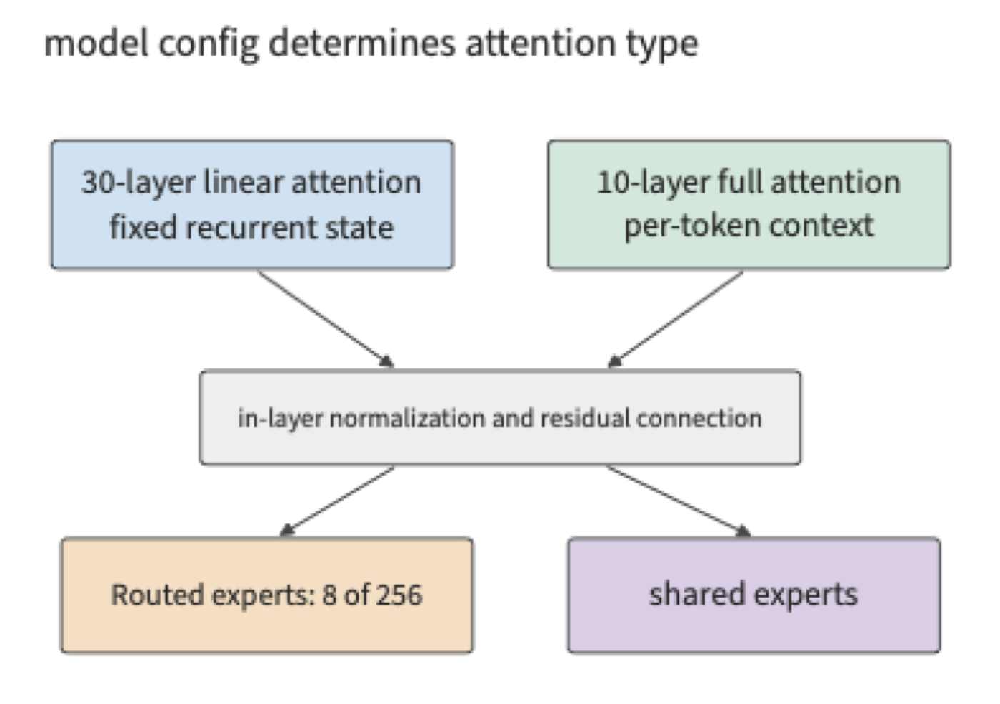
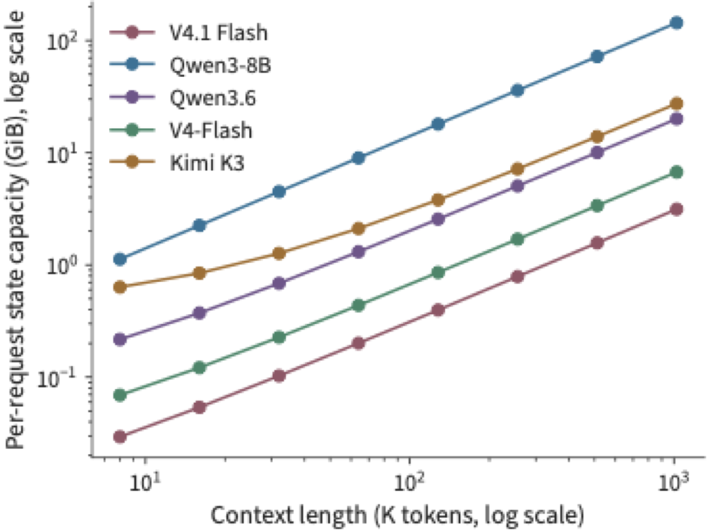
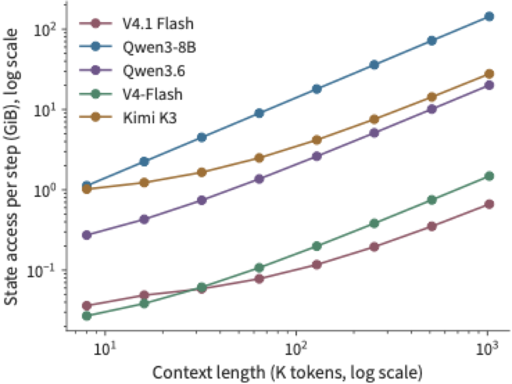
The shapes of these five state curves come from different representations. For every additional token, Qwen3-8B appends \(K\) and \(V\) across all GQA layers; for Kimi K3, only the MLA portion appends context, while the KDA portion keeps a fixed matrix; DeepSeek V4-Flash adds an entry each time a compression block completes. V4.1 Flash goes further, having multiple layers read the same shared global cache, while Qwen3.6 combines recurrent layers with full attention layers. For long contexts, the growth rate determines the added capacity; for short contexts, fixed components such as the recurrent matrix determine the starting footprint.
Adding a fixed recurrent state to a per-token context gives us the capacity model for a hybrid structure:
\(c_{\mathrm{state}}\) is the number of state bytes added per context token, and \(H_*\) is the context length at which the two components occupy equal space. For Qwen3.6, the fixed portion is \(61.875\) MiB and each token adds 20 KiB, giving \(H_*=3168\); for Kimi K3's compact representation, each token adds 27 KiB and the fixed portion is about 433.4 MiB, giving a crossover point around 16.4K context tokens. Below the crossover point, shortening the context saves only a small fraction of the space; well above the crossover point, reducing the representation width per token saves capacity more effectively. DeepSeek V4-Flash instead adds entries as compression blocks complete, so its curve grows in a stair-step pattern.
These states support different ways of accessing information: global KV lets queries select any old token directly, the recurrent matrix retains context relationships through step-by-step updates, and the compression index searches for relevant content among fewer entries. Section 2.6.3 will compare resource requirements together with specific retrieval tasks.18
Exercise 2-5 [Core]: At what context length does KV capacity exceed the fixed state?
For Qwen3.6, take a fixed state of 61.875 MiB and 20 KiB per context token; for Kimi K3's compact representation, the recurrent state occupies 414 MiB, the convolution state occupies 20,348,928 bytes, and each context token adds a further 27 KiB. For each, compute the context length at which the state that grows with context equals the fixed state capacity, and the total state capacity at 32K and 128K context. If the state budget is only 256 MiB, how many context tokens can each model hold at most? Explain why, when the capacity budget is smaller than the fixed state size, shortening the context still cannot fit the model's state.
2.3.6 How Much to Store per Token, How Much to Read per Decode¶
Comparing the context cost of models requires giving three quantities together: the average storage increment per additional token in the global history, the actual state saved at length \(N\), and the history that a single decode query needs to read. Global KV grows with context; a sliding window keeps only a recent span; the recurrent state has a fixed size but still must be read and written at every step. Dividing all three by context length obscures their different growth patterns.
Consider a request whose current query can access a context of \(N=8192\) tokens in total, including the query token's own position. The table below computes global history capacity, and the logical read volume for a single query, at the precision and cache path specified in each row: the selected K/V or shared latent for each layer is read once, reused across the QK scoring and PV computation (i.e., the earlier \(AV\), which aggregates values using attention weights) for each query head, plus the local SWA window and index scan. The recurrent matrix, convolution, and compressor state updates are discussed separately after the table.
| Model and cache path | Average global history growth (B/token) | 8K global history (MiB) | Per-decode attention KV + index read (MiB) |
|---|---|---|---|
| Qwen3-8B, BF16 GQA | 147,456 | 1,152 | 1,152 |
| Qwen3-32B, BF16 GQA | 262,144 | 2,048 | 2,048 |
| Qwen3-30B-A3B, BF16 GQA | 98,304 | 768 | 768 |
| Qwen3-235B-A22B, BF16 GQA | 192,512 | 1,504 | 1,504 |
| Qwen3.5-397B-A17B, BF16 full-attention portion | 30,720 | 240 | 240 |
| Qwen3.6, BF16 full-attention portion | 20,480 | 160 | 160 |
| Kimi K3, BF16 compact MLA path | 27,648 | 216 | 216 |
| DeepSeek V4-Flash, production hybrid format | 3,514.25 | 27.455 | 12.556 |
| DeepSeek V4.1 Flash, production hybrid format | 890 | 6.953 | 11.375 |
Kimi K3's two MLA representations illustrate how the cache path affects capacity: in the table, the compact path adds 27,648 B per token, while the Hugging Face reference implementation adopted in this book, which unrolls K/V, adds 1,474,560 B per token. The cross-model cache calculations list the exact byte counts for both paths.
Both generations of Flash rows use a production hybrid format: V4-Flash's main records are FP8/BF16 hybrid at 584 B each, with an MXFP4 index (a format where every 32 4-bit values share one scale); V4.1 Flash's format is described below. The V4-Flash figures in Section 2.3.3 were instead computed using the BF16 reference format, and under that same 8K context, its global history is 53.75 MiB (plus a 5.375 MiB window), with a single query reading 27.625 MiB. The 27.455 MiB for V4-Flash in the table is the global history resident size under the production format, and it is only numerically close to the 27.625 MiB read volume under the BF16 reference format.
Hybrid attention also adds fixed state. Under this chapter's conditions of FP32 recurrence and BF16 short convolution, Qwen3.5's recurrent matrix plus convolution slots total 184.219 MiB, Qwen3.6's total 61.875 MiB, and Kimi K3's total 433.406 MiB. These fixed states, together with the context cache in the table, jointly determine current memory footprint; a single decode step must also read and write the recurrent matrix and update the convolution slot.
Beyond saving state independently per layer, state can also be shared across layers. For a long time, decoder-only has been the mainstream architecture for general-purpose generative language models: input processing and per-token generation use the same backbone layers, and each layer typically produces its own KV from its own hidden state. V4.1 Flash makes an important adjustment to this division of labor, separating the construction of the context representation from subsequent queries, so that input processing requires much less backbone computation. The technical report calls this design CED, and notes that it was inspired by YoCo's approach of reusing KV across layers.29
Here, "the encoder is responsible for understanding, the decoder for generation" refers specifically to the different roles the two parts play in building the context representation versus computation for generation. The encoder observes the causal constraint, and it is not the traditional sequence-to-sequence encoder that can access the entire input bidirectionally; the encoder is still needed when generating new tokens. This asymmetry lies in where information is produced and which layers each stage must execute, not in handing the input and output to two models that never participate in each other's computation.
To understand this structure, it helps to first separate "generating the global representation" from "querying the global representation." V4.1 Flash's CED sequentially splits the 40-layer text backbone into a first 20-layer causal encoder and a following 20-layer decoder. Both parts belong to the same autoregressive model, and within the encoder, each token accesses only information at or before its current position.
The encoder processes the input first. The global KV needed by the decoder is generated by projecting the encoder's final-layer representation, without requiring every input token to first pass through all the decoder layers. Each decoder layer's local SWA still depends on that layer's own input representation, so the encoder's output for at most the last 128 tokens of the prompt must be fed into the decoder to build local state — referred to below as tail-window replay. Once token-by-token generation begins, each new token passes sequentially through all 40 layers of both the encoder and the decoder. Chapter 3 will compute how much input work this saves, and Chapter 8 distinguishes the two kinds of replay for the encoder and decoder.
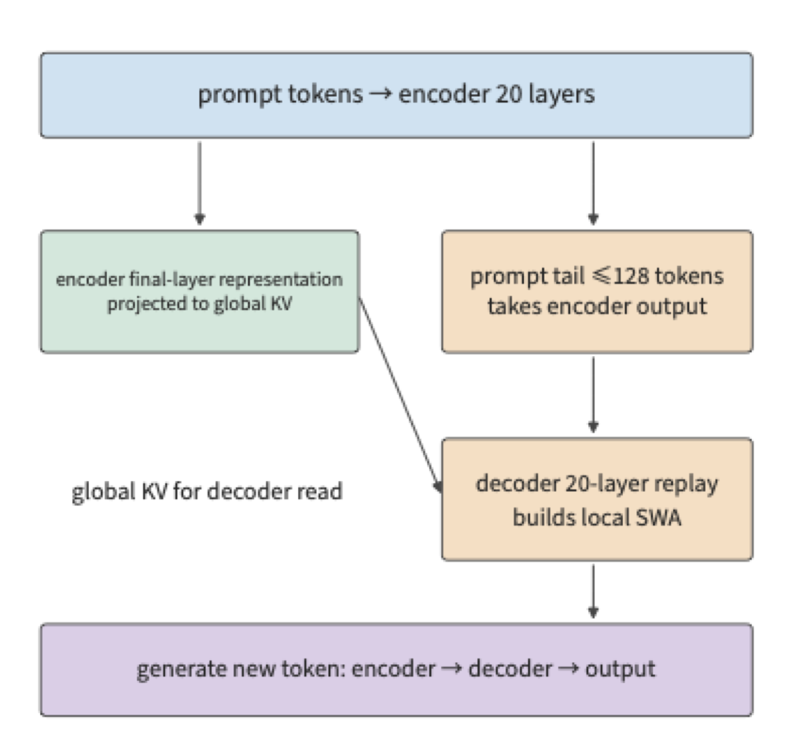
The cost of long contexts also depends on how many layers redundantly save the same piece of information. V4.1's technical report directly lists HBM, SSD, and host memory capacity, along with KV migration bandwidth, as design constraints. V4.1 did not further increase V4's sequence compression ratio: V4 uses a 4:1 CSA and a 128:1 HCA, while V4.1 removes HCA, compressing the encoder's global entries at 2:1 and keeping the decoder's at 1:1. V4.1 shrinks its cache mainly through cross-layer sharing and lower precision, while still preserving finer-grained per-token history.29
Sharing also changes what information each layer can independently choose. A layer that reuses cache no longer generates its own global K/V, but each layer still keeps its own independent query Q and local SWA, so it can compute different attention weights over the shared entries, producing a new output. Cache sharing eliminates one category of per-layer independent representation, but it does not turn every layer's computation into an identical operation.
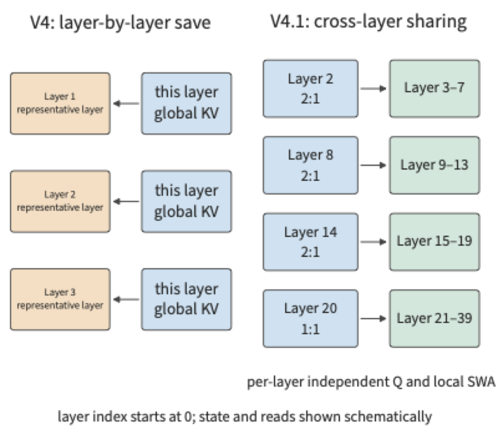
Let's substitute this sharing relationship into the capacity calculation. DeepSeek V4.1 Flash, released in September 2026, has a 40-layer text backbone, but only 4 layers have independent global KV: using zero-based numbering, layers 2, 8, and 14 each produce one compressed record every two tokens, layer 20 produces one record per token, and all other global attention layers share these caches. The 512 values of a main record use FP4 (a floating-point format occupying 4 bits per value), with one additional byte of scale per 16 values, so each record occupies \(512/2+512/16=288\) bytes; an index record occupies \(128/2+128/32=68\) bytes. The average global KV storage increment is
For comparison, the earlier V4-Flash has 21 layers with 4:1 compression and 20 layers with 128:1 compression. Using the format of the official FlashMLA (DeepSeek's open-source MLA attention computation library), with a 584 B main record and a 68 B index record, its average global KV storage increment is
The two average global KV increments differ by a factor of about 3.95, corresponding to the rounded values of 3,514 and 890 B/token in the official chart. Besides the global context cache, V4.1's local window holds at most 128 records per layer, with each FP8 (a floating-point format occupying 1 byte per value) + scale record occupying 528 B, totaling 2.578 MiB across 40 layers. Global history grows with context, while the local window's capacity stays fixed once it fills up.
Tracking the generation process step by step also reveals the growth rhythm of the global cache. For V4.1, the global cache grows by only 356 B going from an even length to the next odd length — this is the one-record-per-token contribution from layer 20; going to the next even length, the three 2:1 compressors in layers 2, 8, and 14 each complete one more record, adding \(4\times356=1{,}424\) B in that step. Once the window is full, subsequent writes overwrite old slots and the capacity stops growing, but writes still occur: the 40 SWA layers together write \(40\times528=21{,}120\) B per step, with compressor updates counted separately.
Layers sharing the same global cache still need to read data, and some layers also re-index; under the 8K scenario, using the production hybrid format from the table, the attention KV (including local SWA) and index logical read volume for V4-Flash and V4.1 Flash are 12.556 and 11.375 MiB respectively — cross-layer sharing mainly reduces the space spent on redundant storage.
Cache reuse and entry selection can also be arranged independently. V4.1's CSA2 splits layers into three modes. Full layers execute the entire pipeline of "generate global KV, index, select, and attend." Reindex layers share the KV but use their own index query to re-select top-k; Reuse layers reuse the selected cache entries as-is along with the cache itself. Of V4.1's 38 global attention layers, 4 are Full, 4 are Reindex, and 30 are Reuse; two additional layers use only SWA. The decoder's first Full layer scans the entire global set and selects up to \(2048\times8=16{,}384\) candidate entries; Section 2.3.2 of the technical report calls this set the candidate pool, where candidates are cache entries available for attention retrieval. Subsequent Reindex layers then each select at most 512 entries from within the pool.30 The search volume for subsequent layers thus has an upper bound, though the initial global scan still grows with context.
For example, consider a query facing 131,072 global cache entries, grouped into 16,384 blocks of 8 each. The decoder's first Full layer first scores all cache entries, uses the highest score within each block as the block score, and selects 2,048 blocks, forming 16,384 candidate entries. That layer then still selects the top-512 from the global scores; subsequent Reindex layers recompute scores within the candidates using a new index query, each selecting 512 cache entries. The candidate pool bounds the search range for subsequent layers, and each layer's top-512 determines which entries it ultimately reads.
The candidate pool bounds the search volume for subsequent layers, but it also means the initial screening affects later selection: once a cache entry falls outside the candidate pool, subsequent Reindex layers in this query can no longer select it. Model training must adapt to this search range, and Chapter 10 explains how V4.1 incorporates the candidate restriction into post-training.
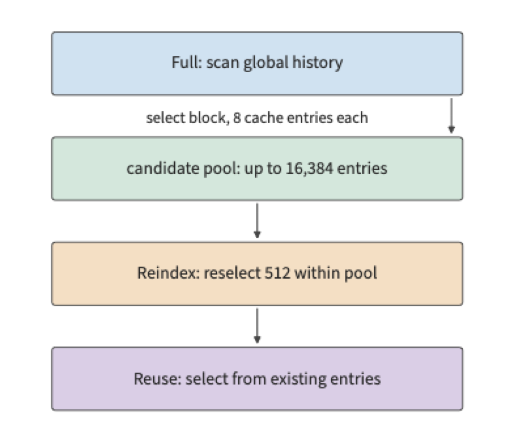
2.4 Conditional Computation and Expert Weight Reuse¶
Section 2.3 reduced context state through sharing, compression, and recurrence. Another major data source is the model weights: must every token use every parameter in the model? This section takes the FFN as its starting point for this question.
A dense FFN applies the same matrices to every token; MoE distributes parameters across multiple experts, and a router selects a small number of experts for each token. This lets "how many parameters the model stores" and "how many parameters a token activates" be tuned separately, and each token's selection within a batch also affects the actual set of weights accessed.
2.4.1 Dense Feedforward Networks and Expert Routing¶
A typical MoE branch first computes routing scores from the input, selects the top-k experts by routing score, sends the token to the selected experts, and finally merges the outputs by routing weight. When shared experts are present, there is also a branch that every token passes through. The experts themselves are usually still built from three matrices — gate, up, and down — so they can be expanded matrix by matrix using the SwiGLU computation from Section 2.1.4.
Take Qwen3.6-35B-A3B as an example. Its text backbone has 40 layers with hidden dimension 2048; each layer has 256 routed experts, selects 8 per token, uses expert intermediate dimension 512, and also has shared experts. A single routed expert has \(3\times 2048\times 512=3,145,728\) parameters, which takes 6 MiB in BF16. All routed experts in one layer occupy 1.5 GiB, and the eight experts selected for one token occupy 48 MiB.
Suppose expert \(e\) actually receives \(t_e\) tokens; its gate/up matrices are \([t_e,2048]\times [2048,512]\), its down matrix is \([t_e,512]\times [512,2048]\), and the main matrix FLOPs are \(6t_e\times 2048\times 512\). Summing this quantity over all experts gives the total matrix FLOPs of all routed experts. The router first decides each \(t_e\); the selected experts execute three projections, and the results are then gathered and merged with weighting; the shared branch runs on every input row.
Let \(E\) denote the total number of routed experts, \(k_{\mathrm{top}}\) the number of experts selected per token, and \(N_e\) the parameter count of a single expert. Then each layer stores \(EN_e\) routed-expert parameters, and the expert matrix work executed per token is about \(2k_{\mathrm{top}}N_e\). Increasing \(E\) expands the selectable parameter set; only an increase in the actual selected count or expert size directly increases this per-token computation. Qwen3.6's "A3B" name reflects its activation scale; the full text parameter count is about 34.66 billion, and the BF16 weights are about 69.321 GB.
2.4.2 Actual FLOPs and Per-Batch Weight Reads¶
The \(2k_{\mathrm{top}}N_e\) quantity in Section 2.4.1 only accounts for a single token's expert work; when a batch of tokens is routed together, we also need to know how many distinct experts they land on.
Example 2-4: Same expert FLOPs, why does weight read volume differ by a factor of 32? For the same layer of Qwen3.6, compare uniform dispatch against concentrated dispatch.
Solution: Even with identical activated parameters, weight reads within a batch can differ. Suppose \(B=64\) requests each execute one decode step simultaneously, each request contributing one input token this step, so \(m=B=64\). Each token selects 8 experts, giving 512 token-to-expert dispatches in total. If these are spread evenly across 256 experts, each expert receives 2 tokens on average, and the current batch touches every routed expert; if all tokens concentrate on the same group of 8 experts, each expert receives 64 tokens, and the current batch touches only 8 sets of expert weights.
Let \(U\) denote the number of distinct experts actually accessed in this batch. If no dispatch to any expert is dropped during routing, then \(\sum_e t_e=Bk_{\mathrm{top}}\), so
The first expression accumulates over the total number of dispatched rows; the second accumulates over the distinct weights actually read. In the example, both routing patterns produce 512 token-to-expert dispatches; one token dispatched to eight experts occupies one row in each of the eight experts' input matrices. These 512 rows come from 64 original tokens, so the matrix FLOPs are identical; but \(U\) is 256 and 8 respectively, giving per-layer read volumes of 1.5 GiB and 48 MiB — a factor of 32 apart. Across all 40 layers, all routed experts together store 60 GiB, while concentrated routing selects only 1.875 GiB of weights per batch.
| Routing pattern at \(B=64\) | Distinct experts accessed per layer | Tokens per expert | Ideal routed-expert read volume per layer |
|---|---|---|---|
| Uniform dispatch | 256 | 2 | 1.5 GiB |
| Concentrated dispatch to the same 8 experts | 8 | 64 | 48 MiB |
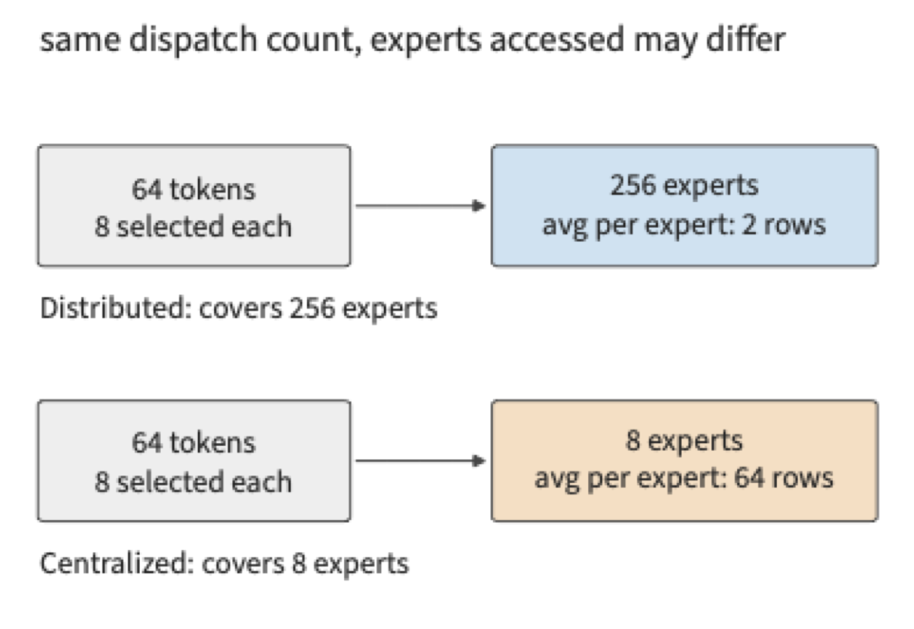
The difference in read volume comes from how many input rows each set of weights serves: under uniform dispatch each expert processes two tokens, under concentrated dispatch each expert processes 64 tokens. The computation performed with the same weights grows to 32 times its original amount, while the ideal weight access volume drops to one thirty-second. At the same time, instead of executing many matrix multiplications with only two input rows, the system now executes a few matrix multiplications with 64 input rows; both weight reuse and computational efficiency are affected as a result.19
Summing over layers to compare whole models: Qwen3.6, decoding with \(B=1\) on an existing 8192-token context, needs about 7.33 GFLOPs, less than Qwen3-8B's roughly 20.0 GFLOPs. The difference in overall model FLOPs comes from several structural changes: a 2048-dimensional backbone with reduced projections, 30 linear layers using recurrent state, and MoE executing only the selected experts plus the shared branch each call. A larger number of experts increases total parameter count, while the work per call depends on which operations are actually executed.
Sparse activation lets total parameter count and the parameter count actually used per token be tuned independently, so a model can access a larger parameter set with less computation. In serving, the routing outcome determines how many tokens reuse each set of expert weights — exactly the difference in access pattern that Example 2-4 shows.
2.4.3 Shared Experts and Latent Space Computation¶
The gap above is determined by the number of input rows an expert receives. We also need to consider the expert's own size: shared experts process every input, while latent-space experts first shrink the input dimension. Both change how many weights a single expert needs and how much computation it performs.
DeepSeek V4-Flash has 256 routed experts per layer, selects 6 per token, and also has 1 shared expert; the routed experts have intermediate dimension 2048. A single expert's gate/up matrices are \([t_e,4096]\times [4096,2048]\), and the down matrix returns the width from 2048 back to 4096; the three projections together contain 25,165,824 parameters. The first three layers use hash routing, and subsequent layers use scored routing: hash routing determines the expert from the token itself, while scored routing selects experts based on the current representation.
The shared expert processes the feature vectors of all \(m\) tokens in this step, while routed expert \(e\) processes only the \(t_e\) tokens dispatched to it. If the shared expert has \(N_s\) parameters, one layer's expert matrix FLOPs equal \(2mN_s+2\sum_e t_eN_e\). In an ordinary single-step decode, each request contributes one new token, so \(m=B\); prefill instead accumulates every token processed in this step across all requests. DeepSeek V4-Flash selects six routed experts per token and executes one shared expert, and its FLOPs are exactly the sum of these two parts; capacity, however, requires storing all 256 routed experts plus the shared branch.
Kimi K3 has 896 routed experts per MoE layer, and each token selects 16 of them. The input is first projected from the 7168-dimensional backbone space into a 3584-dimensional latent space, then passes through an expert transformation with intermediate dimension 3072, and after merging is projected back to the backbone space. The shared expert processes the backbone representation directly. Dimensionality reduction shrinks the routed experts' matrix size while adding two projections for entering and leaving the latent space.4
If experts are distributed across different cards, input tokens must be sent to the card holding each expert, and results must be merged back after the expert finishes computing. Communication volume therefore depends on where experts are placed and where inputs are stored. Chapter 6 discusses multi-card partitioning, and Chapter 9 introduces CPU/GPU placement along with AF separation, which hands attention and FFN to different resources.
Exercise 2-6 [Extension]: How expert count and dispatch pattern affect computation and weight reads
For one layer of Qwen3.6, take \(B=64\), 256 routed experts, and 8 selected per token. Consider both uniform dispatch and concentrated dispatch to the same group of 8 experts, write down each expert's received token count \(t_e\), and then compute the FLOPs, the number of experts accessed, and the BF16 weight read volume. Next, halve the total number of experts, double the intermediate dimension, and halve the number of experts selected per token, and determine whether the total expert parameter count and the actual executed expert matrix FLOPs change. Finally, explain how to incorporate a shared expert's parameter count and FLOPs into the above computation; for a model using latent-space experts, also explain how to account for the projections entering and leaving the latent space.
2.5 Network Shape and Computation Organization¶
Context state and expert selection change the main data sets involved; the network's depth, width, and connectivity further determine how large the matrices are for this work and in what order it executes. Models with similar parameter counts can still have different computation graphs; models with similar matrix FLOPs may still differ in buffer occupancy time and serial steps.
2.5.1 Depth, Width, and Expert Granularity¶
Set aside the vocabulary and small vector parameters for now. If the FFN width holds a fixed ratio to the hidden dimension, the dense backbone's parameter count is roughly proportional to \(Ld^2\). Halving the hidden dimension and quadrupling the layer count can keep this parameter count roughly the same, but the length of the layer-by-layer dependency chain also quadruples. Each matrix is smaller, but the computation passes through more layers; each layer must also store its own context state. Layer count and width therefore change computation granularity and dependency depth under a similar parameter budget.
Expert structure can be adjusted similarly while keeping parameter count and FLOPs unchanged. A single layer's total routed-expert parameters are \(3Edf\), and the per-token expert FLOPs are \(6k_{\mathrm{top}}df\). Halving the expert count \(E\), doubling the intermediate width \(f\), and halving the selected count \(k_{\mathrm{top}}\) leaves both quantities unchanged. Qwen3-235B-A22B's 128 experts of width 1536, selecting 8 per token, can be compared against 64 experts of width 3072, selecting 4 per token. The router output dimension and the number of rows each expert receives still change, which changes the shape of grouped matrix multiplication (organizing multiple experts' matrix multiplications into a single execution).
Use a worked example to check the baseline against two variants. In a 16-token example, all three expert granularities give the same expert matrix FLOPs; both the baseline and the 64-expert variant are about 454 GFLOPs. Halving expert count while doubling per-expert width packs the same amount of weight into fewer, larger matrices; doubling expert count while halving width instead produces more, smaller matrices. The router must compute routing scores for every expert, so its parameter count also scales with expert count. Expert Granularity Calculation tallies routing and expert matrices separately, showing why matrix shapes still differ even when the total expert parameter count is the same.
The shapes of matrices and state also determine the smallest unit for multi-card division of labor. 128 experts can be split into eight groups of 16 each; four KV heads, divided by whole head, can only form four shares, so executing on eight cards requires replicating part of the KV or adjusting the grouping. Chapter 5 analyzes execution efficiency from matrix tiling, and Chapter 6 will further assign these matrices and state to individual cards.
2.5.2 Residual Connections and Cross-Layer State¶
Besides layer count and width, we also need to look at how layers connect. Residual connections add the sublayer input directly to the transformation result, giving the original information and gradient a path that runs straight across layers. An ordinary residual computes \(x_{\ell+1}=x_\ell+f_\ell(x_\ell)\), where \(f_\ell\) is the transformation of the \(\ell\)-th sublayer, so the input \(x_\ell\) must be retained during the sublayer computation and can only be added once the transformation result is produced. If several subsequent layers will still reference the same representation, it must be kept until the last use finishes. The connection scheme thus directly determines which tensors need to be held simultaneously.
An ordinary residual keeps adding information from different depths into the same pathway. To give inter-layer information more ways to combine, while keeping signal propagation stable in a deep network, DeepSeek V4-Flash uses mHC (Manifold-Constrained Hyper-Connections). mHC expands a single residual pathway into several and constrains the mixing coefficients between pathways; here, "manifold-constrained" specifically means the elements of the residual mixing matrix are restricted to be non-negative, with each row sum and column sum kept close to 1.26
This model retains 4-way residual state: each way is a 4096-dimensional intermediate representation of the current token. Keeping four representations lets later layers learn how to combine information from different pathways. Each sublayer first mixes the four representations into a 4096-dimensional sublayer input, executes attention or FFN, and then writes the result back into the residual pathways. The main matrices therefore keep a 4096-dimensional input, and the added work is concentrated in the mixing and merging steps entering and leaving the sublayer. The four-way state lets more sets of representations pass between layers, and the mixing operation ties these representations back to the ordinary sublayer connection.
Processing an 8192-token input, mHC's mixing projections need about 555 GFLOPs, and the non-matrix operations need about 149 GFLOPs. The residual mixing matrix is first normalized by Sinkhorn iteration, which alternately divides each row and each column by its own sum, gradually bringing the row and column sums close to 1; this makes numerical scale more stable across multiple layers of mixing. The normalized coefficients are then used to combine the residual pathways; at the end, these pathways are merged to form the representation fed into the vocabulary head. So multi-way residuals not only add representations that must be stored, but also add mixing and normalization computation at every layer.5
Kimi K3 wants the current layer to be able to select information from different depths as needed, rather than only receiving a single mixed result summed layer by layer. For this, Kimi K3 uses Attention Residuals (AttnRes), which computes weights over representations from shallower layers and takes a weighted sum to form the current layer's input. This attention selects information along network depth, whereas the earlier sequence attention selects information across tokens. To reduce the overhead of storing and reading every layer's output, the block-based implementation groups several layers into a block and keeps the representations available for later blocks to select from.26
Later layers still need to use these block representations, so they must keep being stored during this forward pass and can be released once the forward pass ends. Context KV, by contrast, must be retained across subsequent generation steps. The two differ in the time range they need to be stored: AttnRes adds a temporary store within a single forward pass, while KV persists across multiple calls for a request.20
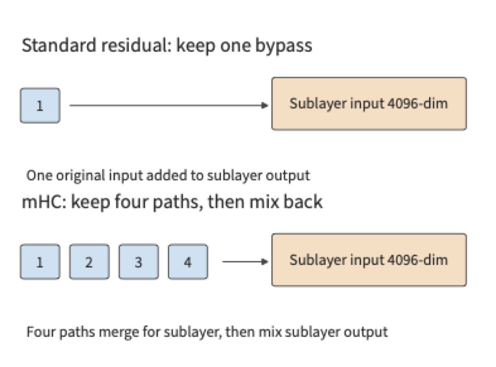
2.5.3 Multi-Token Prediction and Auxiliary Computation¶
The previous two sections changed the shape and connectivity within the backbone; another class of design attaches prediction modules at the end of the backbone, changing how many tokens a single forward pass can produce. An ordinary autoregressive backbone predicts the next token from the current context. Multi-Token Prediction (MTP) builds on this by adding prediction targets or auxiliary prediction modules for several subsequent tokens. During training, these extra targets push the current representation to include information useful for further-ahead content; during inference, the auxiliary modules can first propose several candidate tokens, which the main model then verifies, reducing the number of serial rounds needed to generate the same number of tokens.
Speculative decoding first generates candidate sequences at low cost, then has the target model verify these candidates. When used for speculative decoding, MTP generates subsequent tokens ahead of time from the current backbone features, then hands them to the target model for verification. If multiple tokens pass verification, one round can produce multiple valid outputs; otherwise, generation continues from the last position that passed verification. The speedup therefore depends on how long draft generation and target-model verification each take, and how many tokens pass verification per round. Chapter 8 will work out the relationship among these three factors.
Take DeepSeek V4-Flash as an example and compute one round of auxiliary prediction. Its MTP auxiliary block takes backbone features and token IDs as input and predicts subsequent positions. For a single token, i.e., \(B=1,P=1\), one auxiliary computation needs about 1.80 GFLOPs, of which the shared vocabulary head accounts for about 1.06 GFLOPs. The shared vocabulary head accounts for more than half of this computation: although it adds no independent weights, the vocabulary projection still has to run on every call.6
Auxiliary prediction lets a single forward pass provide multiple candidates, which become valid outputs after verification and sampling. Chapter 3 will organize encoding, generation, iteration, and real-time output into a complete workload.
Let \(T_d\) be the time for an ordinary decode step, and let \(T_s+T_v\) be the combined draft and verification time for one round of speculative decoding, yielding \(\bar g\) valid outputs on average. The amortized time per output is \((T_s+T_v)/\bar g\), and the condition for benefit is
For example, if ordinary decode takes 20 ms, draft plus verification together take 30 ms, and the average round yields two valid outputs, the amortized time per output is 15 ms; if only one is obtained, it takes 30 ms instead. Predicting several extra positions increases the work of a single round, and only if enough of the outputs are accepted does this offset the added computation cost.
2.6 Whole-Model Resource Requirements and Comparison¶
Sections 2.3 through 2.5 introduced three kinds of structural change: context representation determines state size and access pattern, expert selection determines which weights are used on each call, and network depth and connectivity determine computation order. This section brings these parts together, comparing complete models' FLOPs and storage requirements under the same input conditions, then checking model output with concrete tasks.
2.6.1 Resource Requirements of Each Component and the Whole-Model Summary¶
Attention structure and expert configuration of five models. This chapter selects one dense baseline and four structurally different MoE models, comparing their resource requirements using a consistent set of matrix rules. In Table 2-A, the suffix T on parameter counts denotes trillions.
Table 2-A Overall architecture of the five models (text component)
| Architecture parameter | DeepSeek V4.1 Flash | Qwen3-8B | Qwen3.6-35B-A3B | DeepSeek V4-Flash | Kimi K3 |
|---|---|---|---|---|---|
| Total logical parameters, approx. | 551.57B + 196.93B Engram | 8.19B | 34.66B | 284.33B | 2.78T |
| Backbone layers \(L\) | 40 (20+20) | 36 | 40 | 43 | 93 |
| Backbone hidden dimension \(d\) | 5120 | 4096 | 2048 | 4096 | 7168 |
| Attention composition | 2 SWA + 38 CSA2 | 36 GQA | 30 linear + 10 full attention | 2 window + 21 CSA + 20 HCA | 69 KDA + 24 MLA |
| Feedforward composition | 40 MoE layers | Dense SwiGLU | 40 MoE layers | 43 MoE layers | 1 dense layer + 92 MoE layers |
| Routed experts per MoE layer \(E\) | 384 | — | 256 | 256 | 896 |
| Selected per token \(k\) | 6 | — | 8 | 6 | 16 |
| Routed expert compute width \(d_e\) | 5120 | — | 2048 | 4096 | 3584 |
| Dense FFN / routed expert intermediate width \(f\) | 2304 | 12288 | 512 | 2048 | 3072 |
| Shared expert intermediate width | 2304 | — | 512 | 2048 | 6144 total |
| Cross-layer connection | Single-Pass mHC, 4-way | Ordinary residual | Ordinary residual | mHC, 4-way | AttnRes |
The table lists the text component of the five models. V4.1 Flash's roughly 551.57B backbone parameters and 196.93B Engram parameters are listed separately; the latter includes about 196.61B lookup-table parameters plus their projection and gating parameters, and both are jointly counted in the full text weight totals later. V4.1's Single-Pass mHC is an improvement on mHC: each layer reuses the input mixing coefficients computed by the previous layer, so the residual state only needs to be read once. Kimi K3 uses different feedforward structures for different layers: the first layer is a dense FFN with intermediate dimension \(33792\), while subsequent layers use routed experts with intermediate dimension \(3072\). A dense layer sends every token through the same set of wide matrices, while an MoE layer sends each token through several narrower expert matrices.
V4.1 Flash's execution stages are as follows: the 40 layers split into 20 causal-encoder layers and 20 decoder layers, and only layers 2, 8, 14, and 20 store independent global KV, while layers 2, 8, 14, 20, 24, 28, 32, and 36 run the indexer, with layer numbering starting from zero. Full layers generate cache and index, Reindex layers recompute the index, and Reuse layers reuse an existing selection; every layer still stores its own local window. So layer count no longer equals the number of independent global caches, and input length no longer equals the number of query tokens actually processed at each layer.
The table reveals three relationships. Qwen3.6 has more total parameters than Qwen3-8B, yet its backbone is only half as wide: it puts a large number of parameters into selectable experts, calling only eight of them per token. Qwen3-8B and DeepSeek V4-Flash share the same 4096-dimensional backbone, and DeepSeek V4-Flash forms a much larger parameter set through 256 experts per layer. Kimi K3 further moves expert computation into a 3584-dimensional latent space, so the expert input need not share the backbone's width. These differences show that "how large a model to store" and "how much work a token performs" must be computed separately. Tables 2-1, 2-2, 2-4, 2-5, and 2-6 will expand each of these five models in turn, with DeepSeek-V3's Table 2-3 serving as a historical reference for MLA.
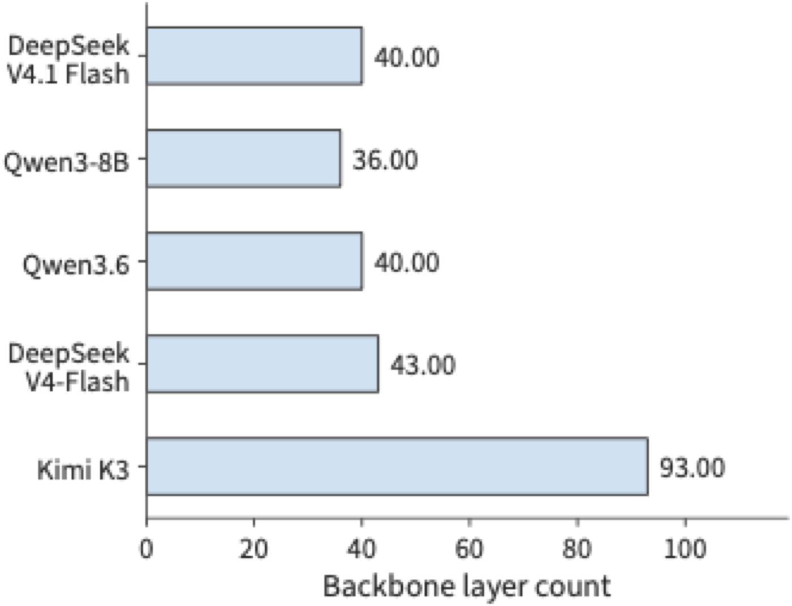
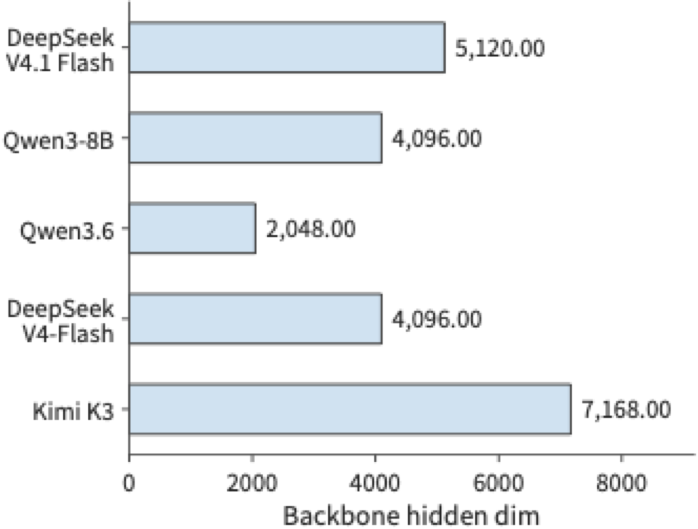
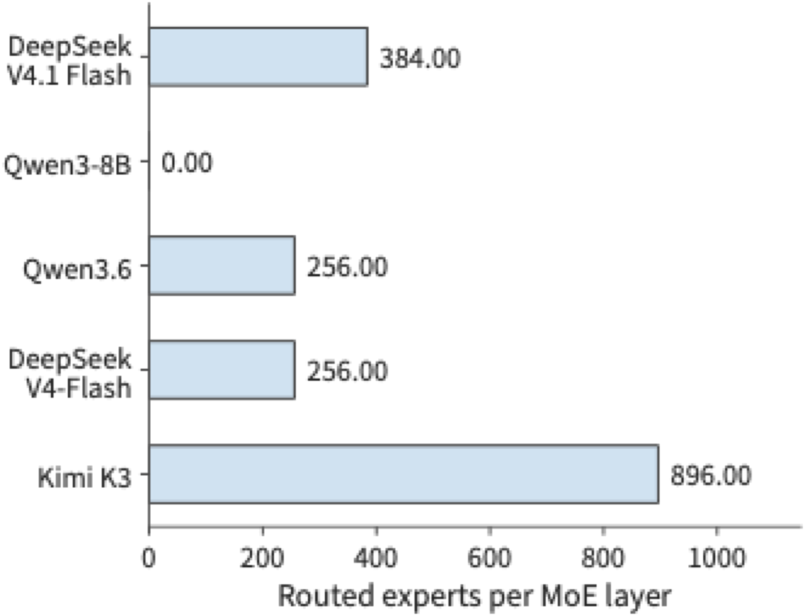
With the parameters of one layer type, the FLOPs of one call, and the state of one request in hand, the whole model needs only sum these terms weighted by the actual number of layers in each type:
Here \(g\) denotes a category of model layer, where layers in the same category share the same attention, feedforward, and connection structure; \(L_g\) is the number of layers in category \(g\). MoE's \(N_g\) includes all experts, while \(F_g\) uses the number of rows each expert actually receives. Table 2-1 has already established the dense baseline for Qwen3-8B; the reference tables at the end of the chapter expand Qwen3.6, DeepSeek-V3, DeepSeek V4-Flash, Kimi K3, and DeepSeek V4.1 Flash in the same way, so readers can trace exactly which matrix each term in the total comes from.
When reading these tables, it helps to trace the data flow step by step: which type of attention layer the input enters, which type of feedforward network it then passes through, and finally how the vocabulary scores are obtained; the accumulation must also include the embedding row lookup, the final normalization, and the vocabulary head. Each table groups rows by attention, feedforward and connection, and output interface; "layers/calls" gives the cumulative multiplier across the whole model, and "matrix FLOPs" remains the floating-point operations for a single execution of that row's operation.
Applying the same accumulation rule to the other models lets us list each model's computation branches item by item. The table below lists, by model, the context state, weights, and additional computation to accumulate, along with the parts most easily omitted when totaling; MTP, DSpark (V4.1's speculative decoding module), and the vision module are added separately according to their scope of execution for this call.
| Model branch | Context state | Weights and additional computation | Parts most easily omitted when totaling |
|---|---|---|---|
| DeepSeek V4.1 Flash | 4 shared global KV/index + per-layer SWA + compression buffer and token history | CED, CSA2, Engram, experts, Single-Pass mHC | Encoder's full input, decoder's tail replay, and the differing position counts of the global projections |
| Qwen3-8B | GQA KV | Dense SwiGLU, output head | Non-matrix arithmetic, output head position range |
| Qwen3.6 | Global KV + recurrent and convolutional state | Routed/shared experts | Linear layers storing fixed-size recurrent state |
| DeepSeek-V3 | MLA latent variable or unrolled KV, depending on execution path | First three dense FFN layers, subsequent MoE and shared experts | Up-projection execution position, the distinction between the two cache paths |
| DeepSeek V4-Flash | Window + compression + index + buffer | Experts, compressor, mHC | Index scan, block boundary updates, shared branch |
| Kimi K3 | MLA + KDA + convolution | Latent-space experts, AttnRes | Unrolled path, cross-layer temporary state, first-layer difference |
Compare full weights, single-step FLOPs, and per-request context state size in turn, then use the per-model breakdown tables to explain which matrices and state each difference comes from.
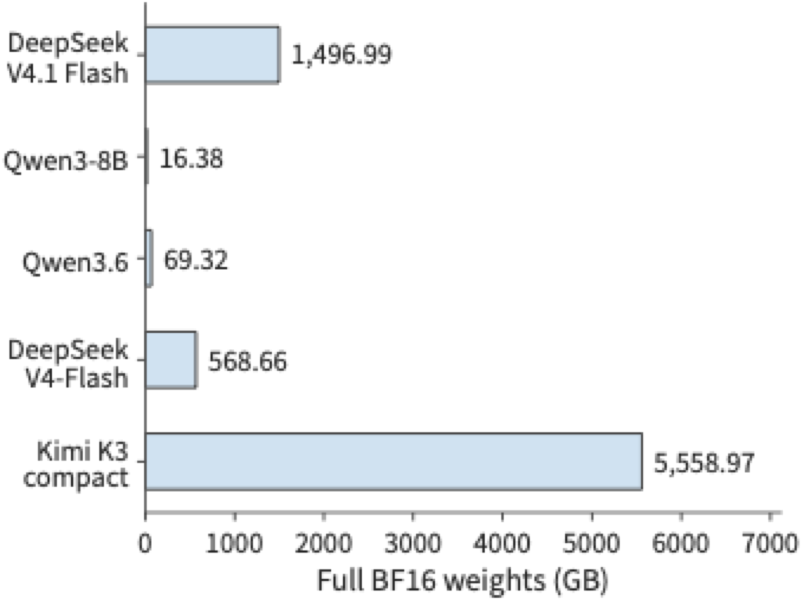
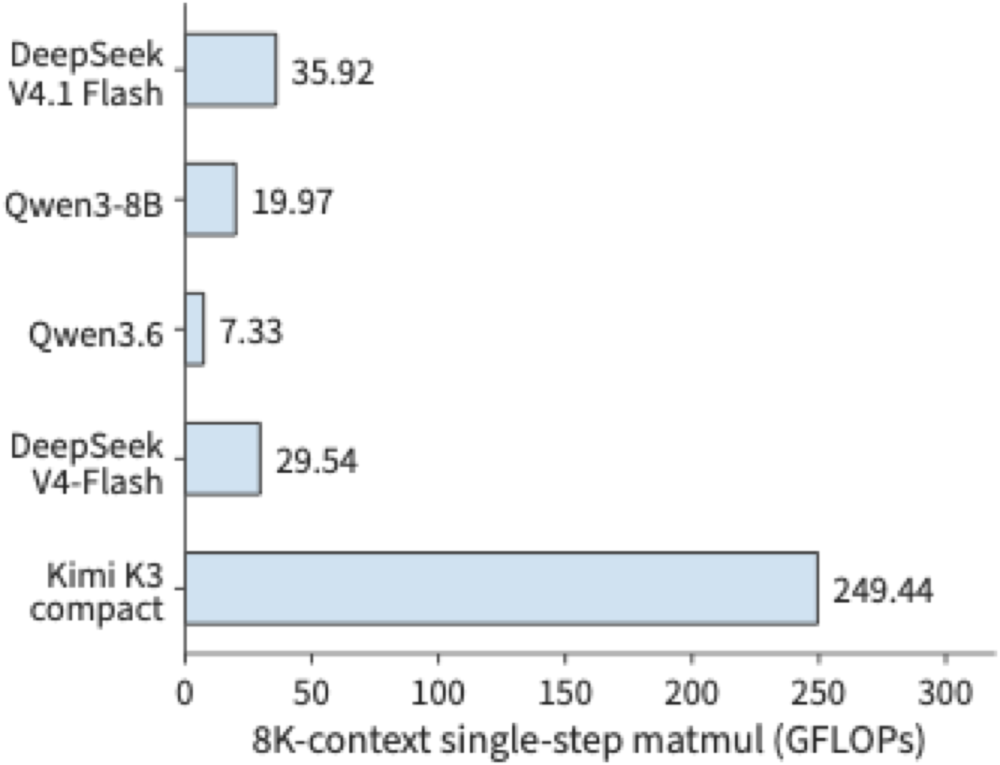
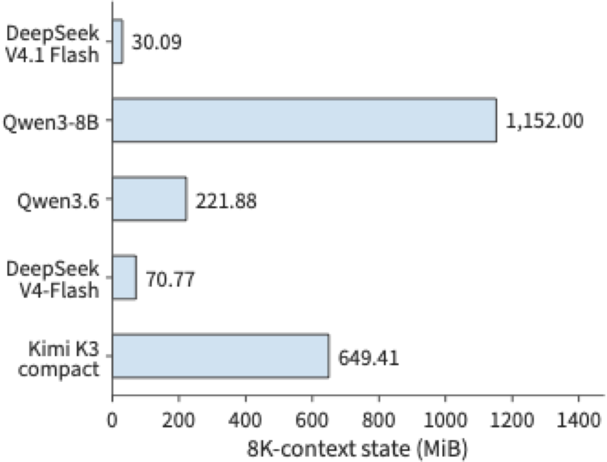
Matrix-by-matrix breakdowns of the five models appear in the Model Matrix Reference Tables at the end of the chapter. The breakdown totals below explain the sources of resource differences.
Multiplying out matrix sizes and accumulating by layer count, DeepSeek V4-Flash's backbone has about 284.3 billion logical parameters, which take about 568.7 GB uniformly in BF16.
Kimi K3's text backbone has about 2.78 trillion parameters, the vast majority sitting in the routed experts of its 92 MoE layers. Each token selects only 16 experts per layer, so the complete model's storage capacity and a single token's FLOPs depend on different factors: the former is determined by all experts, while the latter is determined by the selected experts together with the attention, shared experts, and projections executed alongside them.8
Below, each model's parameters are divided into six mutually exclusive categories: embedding and output, attention projections, dense or shared FFN, routed experts, Engram, and other components. Summing these categories gives the model's total parameter count, and converting at 2 bytes per parameter gives the weight capacities in Figure 2-28. This breakdown gives a clear picture of parameter distribution and also underlies the next table.
Table 2-B What the parameters consist of (unit: billions of logical parameters)
| Model | Embedding and output head | Attention projections | Dense/shared FFN | Routed experts | Engram | Other |
|---|---|---|---|---|---|---|
| DeepSeek V4.1 Flash | 1.324 | 5.126 | 1.416 | 543.582 | 196.929 | 0.118 |
| Qwen3-8B | 1.245 | 1.510 | 5.436 | 0.000 | 0.000 | \(<0.001\) |
| Qwen3.6 | 1.017 | 1.283 | 0.126 | 32.212 | 0.000 | 0.022 |
| DeepSeek V4-Flash | 1.059 | 5.085 | 1.082 | 277.025 | 0.000 | 0.081 |
| Kimi K3 (compact MLA) | 2.349 | 36.180 | 12.882 | 2722.741 | 0.000 | 5.333 |
Other components include routers, latent-space in/out projections, normalization, convolutions, and connections; attention projections include the compression and index projections of DeepSeek V4-Flash. Qwen3-8B concentrates its main parameters in the dense FFN executed for every token, while Qwen3.6, V4-Flash, and Kimi K3 place most of their parameters in routed experts. V4.1 Flash also stores a larger Engram table, whose lookup, projection, and gating parameters are listed separately in the table; the lookup parameters increase the full model's capacity but do not mean every token must traverse the entire table. Qwen3.6's routed experts account for about 93%, while DeepSeek V4-Flash and Kimi K3 are around 97%–98%. Thus the total capacity of these three is mainly determined by the expert set, while the per-token expert compute depends on the experts selected at each layer.
Table 2-C prefill computation and selected expert weights under identical input conditions
| Model | 8K prefill (TFLOPs) | BF16 weight of selected routed experts per token (GiB) |
|---|---|---|
| DeepSeek V4.1 Flash | 143.95 | 15.820 |
| Qwen3-8B | 133.59 | — |
| Qwen3.6 | 52.09 | 1.875 |
| DeepSeek V4-Flash | 231.13 | 12.094 |
| Kimi K3 (compact MLA) | 1863.46 | 90.562 |
Both invocations take \(B=1\); prefill is \(S=0,P=8192\), decode is \(S=8192,P=1\), and the vocabulary head processes only the final token in both cases; the per-step matrix compute in Figure 2-29 is accumulated under this same set of conditions. The state in Figure 2-30 is the space required to retain 8192 context tokens: context representations use BF16, and recurrent state and compression buffers use FP32 as appropriate to each implementation. V4.1 Flash also includes the int64 (64-bit integer) token history cache from the reference implementation, used by Engram to construct cross-call n-grams; the capacity of the production FP4 global cache and FP8 window is given in Section 2.3.6. The last column of the table sums the routed-expert weights selected by one token across all layers, then converts to bytes using BF16. Comparing this table against Figures 2-28 through 2-30 lets us separately compare the space occupied by the full model, the compute of a single invocation, and the space occupied by the request's context.
Each model accumulates along its own execution path: V4.1 Flash uses the paper's CED plus tail-window replay with indexing restricted to the candidate set; Qwen3-8B uses effective causal attention; Qwen3.6 uses an item-by-item eager rectangular attention implementation plus a chunked linear branch; DeepSeek V4-Flash uses effective main attention plus reference indexing; Kimi K3 uses compact MLA plus chunked KDA. Comparing Figures 2-28 through 2-30: Qwen3.6 stores about four times the weights of Qwen3-8B yet has fewer per-step matrix operations; DeepSeek V4-Flash's weights grow further, yet its 8K state actually shrinks due to compression and selection; Kimi K3 has more experts, a larger hidden dimension, and more layers, so it must store more weights and perform more operations. These differences show that total parameter count, per-call compute, and context state size must each be computed from their own corresponding structure.
Deriving per-step read volume from context state size. Qwen3-8B uses 1152 MiB of old KV per step; under the BF16 reference format used in Figure 2-30, DeepSeek V4-Flash's main-attention read plus index scan together total 27.625 MiB, and it also updates the compressor; switching to the production hybrid format from Section 2.3.6 reduces this to 12.556 MiB. Kimi K3's compact MLA uses 216 MiB of context state, and its 414 MiB recurrent matrix must be both read and written each step, for a combined read-write volume of 828 MiB; Qwen3.6's corresponding figures are 160 MiB for the global-attention KV cache and 120 MiB read-write for the recurrent matrix. Recurrent state must be read out and updated every step, while context representations must serve the current query. So even when state size is fixed, there is still a corresponding read-write cost at every step.
Quantization encoding and metadata jointly determine weight capacity. When computed uniformly in BF16, each parameter occupies 2 bytes, so weight size directly reflects differences in parameter count. Actual released model checkpoints (files holding saved parameters) use their own storage formats: DeepSeek V4-Flash's backbone is about 156.02 GB, and Kimi K3's text model is about 1559.97 GB. File size is jointly determined by low-bit-width matrices, parameters kept at higher precision, and format metadata; uniform precision reflects parameter scale, while file size reflects how many bytes these parameters actually occupy. After the model is loaded, further space must be allocated for format conversion and computation. Chapter 5 will analyze how storage format and runtime implementation affect GPU memory footprint.
When comparing the two tables, also note the division of labor across V4.1 Flash's stages. V4.1's full text weights include Engram; the full matrix compute of prefill consists jointly of the encoder, decoder global KV projection, tail-window replay, and output head. When generating a new token, both parts of the network must execute, so the savings ratio from prefill cannot be applied directly to decode.
Table 2-B's parameter composition explains weight capacity, while Table 2-C shows how these parameters participate in a single call. Combined, they let us distinguish "how much space is needed to store the whole model" from "how many resources are used to process one token."1
In Table 2-C, V4.1 Flash's 8K prefill requires only 143.95 TFLOPs. Table 2-D breaks this compute down by execution stage and compares it against a reference full-layer forward pass.
Table 2-D How V4.1 Flash's 8K input is distributed across execution stages (TFLOPs)
| Stage | Reference full-layer forward | CED + tail-window replay |
|---|---|---|
| 20-layer encoder | 142.139 | 141.727 |
| Decoder shared global KV and index-key projections | 0.044 | 0.044 |
| Query, feedforward, etc. compute of 20-layer decoder | 140.202 | 2.175 |
| Vocabulary head for tail token | 0.001 | 0.001 |
| Total | 282.386 | 143.947 |
The reference path executes all 40 layers over all 8192 tokens, and following the public implementation, computes the full rectangular index scores first and then masks them; the CED path's encoder processes the full input, the decoder's global KV and index keys are still generated for the full input, but the decoder body processes only the final 128 tokens, and subsequent indexing is restricted to the candidate set. The table includes the full text-matrix work of each path; the difference comes both from the number of execution positions and from the indexing algorithm.
Both paths include attention, routing scores, routed and shared experts, Engram projections, Single-Pass mHC projections, and the vocabulary head. Separating the decoder's global projection from its query computation shows how CED shortens the compute chain traversed by a long prompt.31
Compute and state growth as context grows from 8K to 1M. Long-document Q&A and multi-turn tasks amplify the cost of context access. Below we hold single request, one new token added at a time, and tail-token vocabulary head fixed. The 8K scenario has 8192 history tokens; the 1M scenario has 1,048,575 history tokens, plus the current query, for exactly 1,048,576 visible positions.
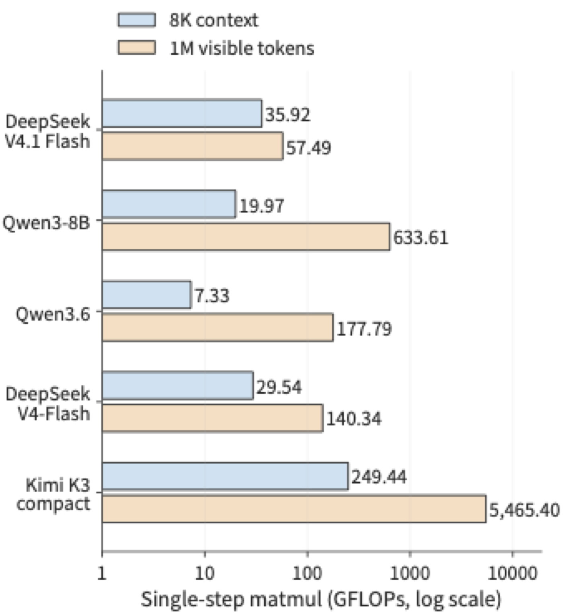
Table 2-E tallies separately the attention scoring and value aggregation for the current query alone; V4-Flash and V4.1 Flash also add the index dot products. The state column lists the context and fixed state present before the call, with precision consistent with Figure 2-30. The published configurations of Qwen3-8B and Qwen3.6 support 40,960 and 262,144 positions respectively; the 1M rows for both are extrapolated under the same structure, for comparing growth patterns.25
Table 2-E Interaction compute and state capacity under long context
| Model | 8K context interaction (GFLOPs) | 1M context interaction (GFLOPs) | 8K state (GiB) | 1M state (GiB) |
|---|---|---|---|---|
| DeepSeek V4.1 Flash | 3.66 | 25.23 | 0.029 | 3.138 |
| Qwen3-8B | 4.83 | 618.48 | 1.125 | 144.000 |
| Qwen3.6 | 1.34 | 171.80 | 0.217 | 20.060 |
| DeepSeek V4-Flash | 3.00 | 113.80 | 0.069 | 6.735 |
| Kimi K3 (compact MLA) | 41.08 | 5257.04 | 0.634 | 27.423 |
V4.1 Flash's global KV has only four independent sources, so growing the context does not add one copy per layer across all 40 layers. Main attention uses at most 128 local tokens and 512 global entries per layer; the decoder's first Full layer generates the candidate set, and the subsequent four Reindex layers each scan at most 16384 candidate entries. The encoder's three indexers and the decoder's first indexer still must scan the growing global history, so their compute continues to rise; cross-layer sharing and tiered indexing change the growth rate. At 1M, its context interaction is 25.23 GFLOPs, and its full per-step matrix work is 57.49 GFLOPs.
V4-Flash follows CSA and HCA at their two compression granularities: CSA's main-attention selection cap stays fixed, but its index scan grows with history; HCA reads all completed coarse-grained entries. At 1M, its context interaction is 113.80 GFLOPs, and its full per-step matrix work is 140.34 GFLOPs. At shorter contexts, V4.1 Flash's larger backbone adds more projection and expert compute; only once history is long enough do its fewer indexers and tiered candidate selection offset this extra work.
Kimi K3's 69 KDA layers keep fixed recurrent state, while its 24 MLA layers continue to access history that grows with context. Compact MLA reduces cache capacity but does not eliminate the compute between the query and history tokens; at 1M, this interaction reaches 5257.04 GFLOPs, and the whole model reaches 5465.40 GFLOPs. Evaluating long-context designs requires separately checking how much state is retained, which positions are accessed, and how much extra work is added for indexing and updating state.
The unified computation also retains a 200K scenario: V4.1 Flash's full per-step matrix work is 40.21 GFLOPs, and V4-Flash's is 50.48 GFLOPs. By 1M, the gap between the two widens further, which is why the main text uses 1M to show the design value of long-context handling.
2.6.2 Parameter scale, numerical precision, and capacity constraints¶
Placing the model weights and per-request state obtained from itemized computation into the same GPU memory capacity table lets us determine how many concurrent requests one card can hold, and how much space quantized weights can free up.
For a given card, first subtract weights, workspace, and other fixed reserved space from the total capacity; only the remaining space can hold request state. In the simplified case where requests are equal length and each independently stores its own KV, this can be written as:
The numerator is the space available for requests after subtracting fixed resident data; the denominator is the state size per request. Each additional request requires allocating a corresponding amount of state space; when the remaining space cannot hold one complete state, no further request can be added, so the result must be rounded down. Recurrent and convolutional state also count as per-request data and are included in the denominator along with KV.
Take running Qwen3-8B BF16 on a 24 GB RTX 4090 as an example: weights occupy \(16{,}381{,}470{,}720\) bytes, workspace reserves 2 GiB, and each request's 8K context occupies 1.125 GiB. The number of requests that can fit is
At a 16K context, each request occupies 2.25 GiB, and the same space fits only two; at 4K, it fits nine. The number of requests jumps in integer steps because the remaining space must hold one request's complete state — holding a partial state is meaningless.
How much history to retain thus becomes a decision that affects both the application and the system. If the application retains more material, the model can continue to reference it; but the service must then allocate more state space per request. The GQA, MLA, and recurrent representations from Section 2.3 further change how this information is stored. Model structure, context organization, and concurrent capacity can be compared within the same budget, then tested against actual tasks to determine which schemes achieve the required answer quality.
For how much space quantization can free up, take the larger DeepSeek-R1-Distill-Llama-70B as an example. Section 1.2.3 already gave this model's BF16 weights at 141.107 GB, its 8-bit grouped-quantization weights at 73.726 GB, and one request's 8192-token BF16 KV at 2.5 GiB. Under the same grouping scheme, keeping embeddings, output head, and normalization at higher precision, and counting the space for scales and tail padding from packing, a 4-bit scheme comes to about 39.500 GB.
The 39.500 GB of the 4-bit scheme includes low-bit-width matrices, parameters still kept at high precision, and the overhead of scales and packing, and is larger than the result of simply converting all parameters to half a byte each. On an H100 SXM with 80 GB (decimal) of memory and a fixed 2 GiB reservation, the 8-bit scheme fits 1 request of 8K, and the 4-bit scheme fits 14. When context grows from 8K to 32K, each request's KV quadruples, and the number of requests the 4-bit scheme can hold simultaneously drops to 3. Compressing weights frees up space to hold more requests' contexts, but the longer each context is, the fewer requests can be held at once.24
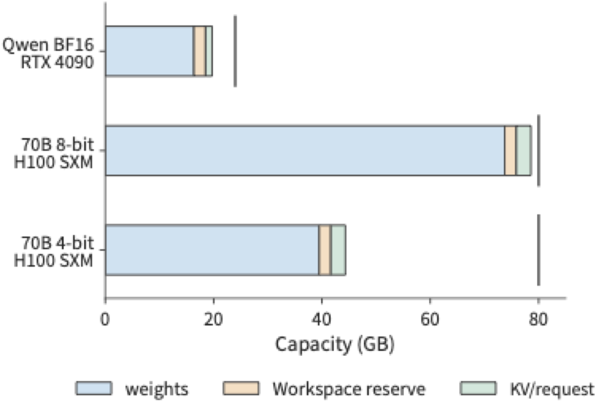
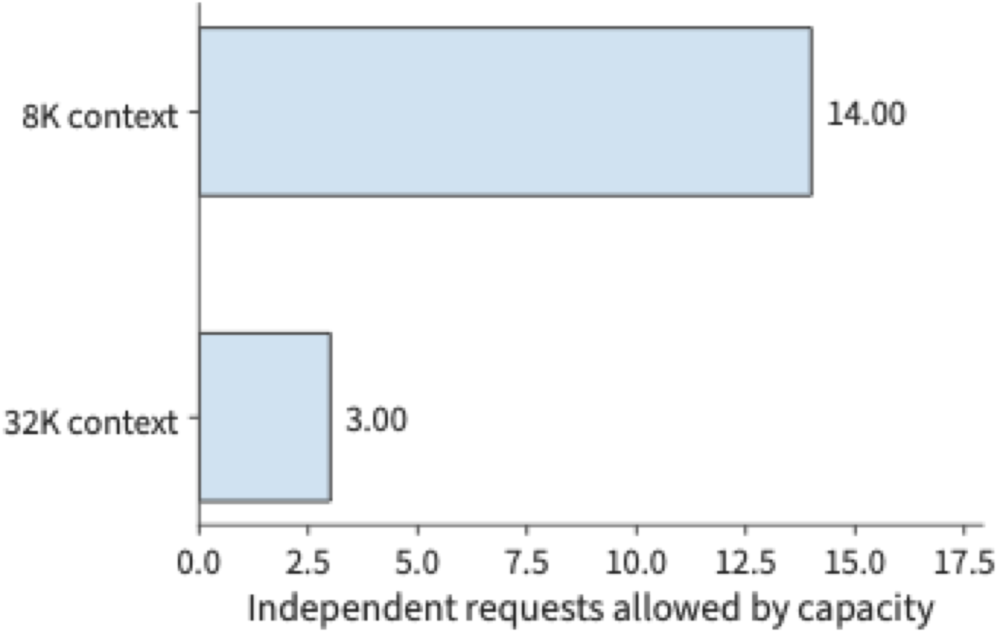
The same method can also analyze larger deployments. The BF16 weights of a 235B model are about 470 GB, exceeding the combined 192 GB of eight RTX 4090s, while a single HGX server's eight H100 SXMs together provide 640 GB. After subtracting weights, about 170 GB remains, which must hold each request's state, workspace, and the data that must be replicated across several cards after sharding — for example, normalization parameters and routers, each stored once per card, and KV from 4 KV heads split across eight cards, where each head is stored once on each of two cards. Chapter 6 will compute these per-card budgets based on how the model's work is divided across cards.
Capacity determines the minimum number of cards an instance requires; request length and concurrency then determine how much work the instance must handle. Lower bit-width frees up space, shorter contexts allow more requests to reside simultaneously, and within-batch reuse changes the execution cost of these requests. Therefore, choosing a deployment scheme requires considering capacity, access volume, and compute volume in sequence; Chapter 3 will further add request arrival and deadlines.
Exercise 2-7 [Core]: Determining how many requests GPU memory capacity can hold
Using an RTX 4090 with 24 GB of memory and a 2 GiB workspace reservation, take Qwen3-8B's BF16 weights at the exact value given in the table. Find the maximum number of requests that can be held simultaneously at 4K, 8K, and 16K context respectively; for the 8K case, increase the workspace reservation to 3 GiB and recompute. Then, using the table's 70B 4-bit weights of 39.500 GB, switch to an RTX 6000 Ada with 48 GB of memory, keeping the reservation at 2 GiB, and find the number of requests for 8K and 32K context respectively. First compare the capacity requirements of weights, workspace, and KV, then compute the number of requests the remaining memory can hold.
Conversely, given the accelerator and service target, we can also solve for the space left for the model. Let per-card available capacity be \(C\), fixed reserved workspace be \(M_0\), per-request KV be \(K\), concurrency be \(B\), and bytes per parameter be \(b_W\). Ignoring other resident objects, the upper bound on parameters given by single-card capacity is
First determine the state size required by the service, then compute the space left for weights. Taking the RTX 4090's 24 GB capacity, 2 GiB workspace, 4 requests each with 8192 tokens, and per-request KV following Qwen3-8B's 1.125 GiB — with BF16 at 2 bytes per parameter, the remaining space holds at most about 8.51 billion parameters.28 Figure 2-34 first subtracts the service state, then carves out the weight budget.
When model structure changes, weight budget and state budget change together. Increasing layer count or KV head count increases per-request \(K\), reducing the space left for weights; distributing across cards instead expands total capacity while also increasing communication. In the Llama 3 report, the 405B BF16 inference deployment uses two servers with 16 H100s total, since the required capacity exceeds what a single server's memory can provide.27 Model scale, state structure, and card count must therefore be chosen together.
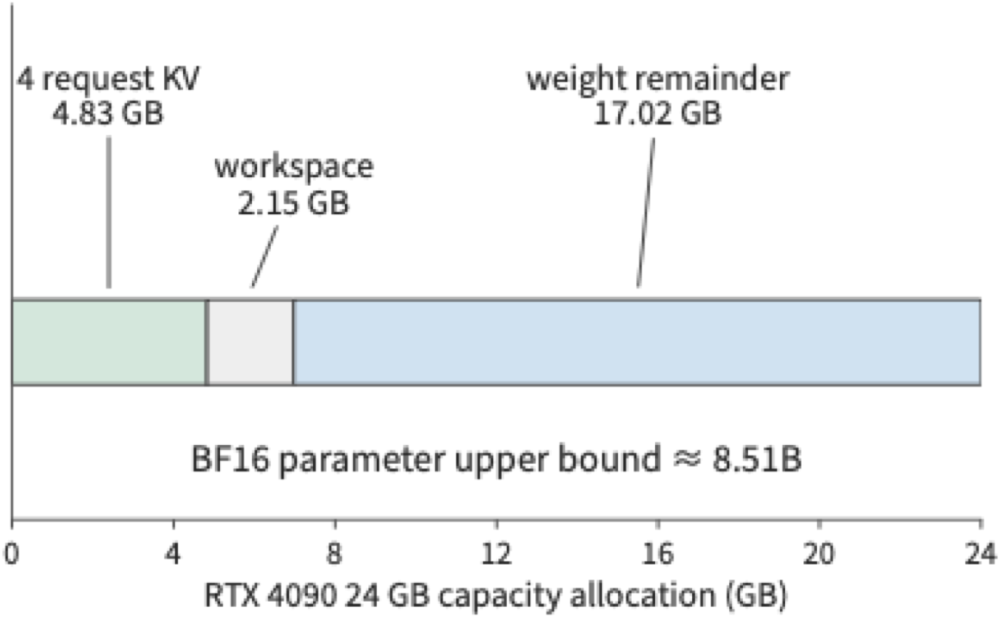
2.6.3 Comparing models under different request scenarios¶
Finally, we bring together capacity, call chain, and task quality. First exclude configurations whose capacity is insufficient for each card, then accumulate request work along each model's actual computation path, and finally check whether the model can complete the target task.
When comparing full models, we can start from two kinds of input. Fixing \(S,P,G,B\) gives the resource requirements for the same call lengths, making structural differences easy to observe; fixing the text and task instead requires first passing it through each model's tokenizer to get the input length, then checking the output. These two comparisons answer, respectively, "how is the same number of positions computed" and "how must this same task be executed."
First compare resource requirements under the same input and output length. Take \(S=0,P=128,G=4,B=1\); the model executes one prefill and three decodes, ultimately retaining 131 processed positions. Summing the matrix compute of these calls gives the table below.9
| Model | Full-request matrix compute (TFLOPs) | Implementation used in this computation |
|---|---|---|
| DeepSeek V4.1 Flash | 4.14 | CED + tail-window replay, indexing within candidate set |
| Qwen3-8B | 1.83 | Effective causal attention |
| Qwen3.6 | 0.66 | Rectangular full attention plus chunked linear branch |
| DeepSeek V4-Flash | 3.40 | Effective main attention plus reference indexing |
| Kimi K3 (compact MLA) | 27.16 | Compact MLA plus chunked KDA; decode uses recurrent KDA |
This table follows the same execution paths as Table 2-C, with Kimi K3 using compact MLA throughout, moving the up-projection to the query and aggregation side. V4.1 Flash's input is exactly 128 tokens, all falling within the decoder's replay window, so this short request does not get the benefit — seen with long prompts — of skipping a large number of decoder positions. The full request accumulates prefill and three decodes along the same selected path, with context growing from 128 to 131; this path's matrix shapes and state representation jointly determine each item of compute.
Extending from a single call to a complete request makes the role of input and output clearer. Increasing \(P\) mainly increases the work of processing the input once, as well as the context length at the start of subsequent decodes; increasing \(G\) instead repeatedly executes projections, experts, and the output head, and reads the context multiple times. Long input with short output and short input with long output thus place different demands on each type of resource; Chapter 3 will analyze the system load when these two kinds of requests arrive continuously.
Exercise 2-8 [Extension]: How prefix reuse and input edits change model compute
One round of input totals 1443 tokens, of which the first 1392 hit the cache, returning 128 tokens. Find the values of \(S,P,G,n_d\), the context length at the end of the request, and the size of this round's newly added KV. Compared with full recomputation, how much do reusing the cache reduce the number of projection rows and the number of effective causal query-key pairs, respectively? If the content is edited at the 501st input token, recompute the longest reusable prefix and the new input length.
Now consider the second comparison, that of fixed text. Here different tokenizers produce different input lengths. For instance, across eight short-phrase retrieval questions, both Qwen3-8B and DeepSeek V4-Flash correctly found the target phrase, but the short text corresponds to 523 or 524 tokens in Qwen versus 501 in DeepSeek V4-Flash; the longer text corresponds to 2121 or 2122 tokens versus 2036 tokens. Using the same text keeps the task content consistent, while each model's own token count determines the actual input shape.
Therefore, comparing models requires answering two questions at once: whether the same task can be completed, and how many resources are needed to complete it. Only by first judging correctness against a consistent standard, then substituting each model's own input length into the model's resource table, can we connect structural differences to actual use.10
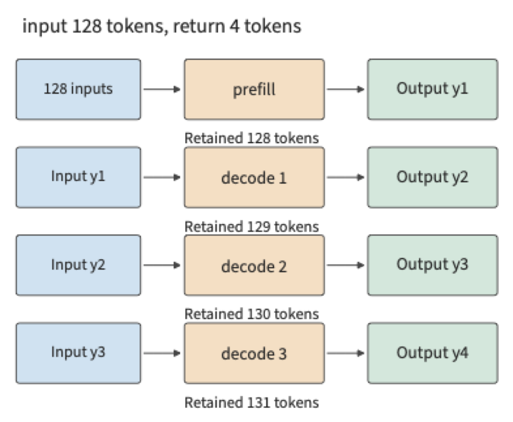
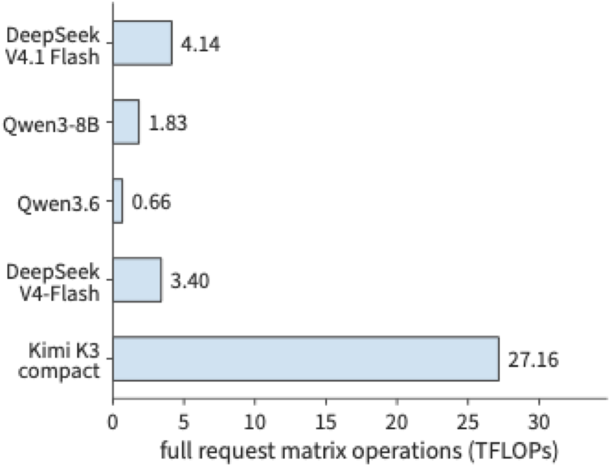
Exercise 2-9 [Extension]: Choosing a model based on capacity, compute requirements, and task quality
Using Figures 2-28 through 2-30 and Table 2-C, list, for each model, the requirements for full weights, 8K state, single-step decode, and 8K prefill. Deploy on a single H100 SXM with 80 GB of memory, reserving 2 GiB of workspace, using BF16 weights. First determine which models fit entirely on a single card; then reframe the question for multi-card deployment, stating which additional timing and communication parameters would need to be drawn from later chapters. Change the output token count \(G\) to 1 and recompute the number of prefill and decode calls. Finally, write out a quality standard for a short-phrase retrieval task, explaining what questions same-token-count comparison and same-text comparison each answer.
This chapter started from the computation graph and progressively worked out the resource requirements of a complete request. Attention determines how context is stored and accessed, MoE determines which weights are selected on each call, and network depth and connectivity determine computation order and temporary storage. The next chapter will add request length distributions, arrival times, tool calls, training, and reinforcement learning (RL), analyzing how this computation accumulates into system load over time.
Fallacies and Pitfalls¶
Fallacy: more parameters always mean more computation per token. Total parameters determine the capacity of the complete model; the experts selected by MoE, the type of attention mechanism, and the call shape determine the current work. Compare Table 2-A, Table 2-B, and Figure 2-29 to explain which factors determine parameter count and which determine computational complexity respectively.
Fallacy: if KV capacity drops to a quarter, attention computation drops proportionally too. GQA shares the context representation, but query heads still score separately; MLA changes the context width and also changes where the up-projection executes. First identify which matrices and state are altered, then compute the remaining work.
Fallacy: if state size is fixed, access overhead can be ignored. The fixed recurrence matrix still needs updating; prefill can also produce temporary chunk state. Capacity, cumulative access, and peak working set answer different questions.
Fallacy: equal input token counts make model capability comparisons fair. Input and output token counts are suitable for comparing resource structure; same-text tasks additionally need fixed scoring, quality, and execution conditions, and must allow for different tokenizers producing different lengths.
Chapter Exercises and Reproduction¶
Exercises 2-2, 2-5, and 2-7 form the core; the remaining exercises analyze special cases and apply the methods to other models. Complete your predictions and derivations independently first, then check them against the accompanying calculations. The calculation commands run from the repository root; for the complete set of variants, see the Chapter 2 extended material.
| Corresponding content | Local reproduction entry point |
|---|---|
| Sequential dependency and cache equivalence | python3 calculations/calc.py sequence-dependencies --format md |
| Qwen3.6 forward pass and experts | python3 calculations/calc.py qwen36-forward --format md |
| DeepSeek V4.1 Flash complete matrix computation | python3 calculations/calc.py v41-forward --tokens 8192 --execution ced --format md |
| DeepSeek V4.1 Flash reference full-layer path | python3 calculations/calc.py v41-forward --tokens 8192 --execution reference --format md |
| Five-model comparison and complete request | python3 calculations/reproduce_ch02.py |
| DeepSeek V4-Flash state decomposition | python3 calculations/calc.py state --model deepseek-v4-flash --length 8192 |
| Kimi K3 state and chunked execution | python3 calculations/calc.py k3-kda-chunk --tokens 8192 |
| Expert granularity | python3 calculations/calc.py qwen235-expert-granularity --format md |
| Single MTP call | python3 calculations/calc.py v4-mtp-forward --format md |
| Substituting known trace fields | python3 calculations/calc.py trace-resource-bridge --format md |
| Five-model request comparison | python3 calculations/calc.py request-model-comparison --format md |
For the figures, computed data, and reconstruction methods in this chapter, see the figure directory. The end-of-chapter material describes the structure and design of each model.
Model Matrix Reference Tables¶
This set of tables traces from whole-model totals back to specific matrices. When consulting them, first determine the model and execution branch, then multiply the single-call matrix FLOPs by the layer count; for routed experts, also sum over the actual number of input rows received by each expert. The Qwen3-8B baseline in Table 2-1 appears in Section 2.1.4.
Table 2-2 Qwen3.6-35B-A3B: resource consumption computation for hybrid attention and MoE modules
The backbone has 40 layers in total: 10 layers use the full-attention branch, and 30 layers use the linear-attention branch; both types of layers then execute MoE. Each token selects 8 of 256 routed experts, plus one shared expert. The linear branch's QKV output splits into 2048, 2048, and 4096 dimensions; its \(Q\) and \(K\) are reused according to the value heads' grouping relationship.
Model Input
| Module and role | Input → Output (rows × width) | Weight matrix (input width × output width) | Matrix FLOPs | Layers/calls |
|---|---|---|---|---|
| Token embedding lookup | \(m\) IDs → \(m\times2048\) | Lookup table \(248320\times2048\) | 0; row lookup access counted separately | 1 |
Full-Attention Branch
| Module and role | Input → Output (rows × width) | Weight matrix (input width × output width) | Matrix FLOPs | Layers/calls |
|---|---|---|---|---|
| Full attention: \(Q\) and output gating | \(m\times2048\to m\times8192\) | \(2048\times8192\) | \(2\times m\times2048\times8192\) | 10 |
| Full attention: \(K\), \(V\) | \(m\times2048\to m\times512\) | \(2048\times512\), 2 total | \(2\times 2\times m\times2048\times512\) | 10 |
| Full attention: context interaction | \(16\) \(Q\) heads, \(2\) KV heads, head width \(256\) | No additional weights | \(4\times16\times256\times N_{\mathrm{pair}}\) | 10 |
| Full attention: output projection | \(m\times4096\to m\times2048\) | \(4096\times2048\) | \(2\times m\times4096\times2048\) | 10 |
Linear-Attention Branch
| Module and role | Input → Output (rows × width) | Weight matrix (input width × output width) | Matrix FLOPs | Layers/calls |
|---|---|---|---|---|
| Linear attention: joint QKV projection | \(m\times2048\to m\times8192\) | \(2048\times8192\) | \(2\times m\times2048\times8192\) | 30 |
| Linear attention: output gate \(z\) | \(m\times2048\to m\times4096\) | \(2048\times4096\) | \(2\times m\times2048\times4096\) | 30 |
| Linear attention: \(a\), \(b\) control values | \(m\times2048\to m\times32\) | \(2048\times32\), 2 total | \(2\times 2\times m\times2048\times32\) | 30 |
| Linear attention: convolution and delta recurrence | \(Q,K\) each \(16\times128\); \(V\) is \(32\times128\) | Convolution: 8192 channels, kernel width 4 | Recurrence is \(O(m\times32\times128^2)\); chunked algorithm counted separately | 30 |
| Linear attention: output projection | \(m\times4096\to m\times2048\) | \(4096\times2048\) | \(2\times m\times4096\times2048\) | 30 |
Expert Branch Shared Across Layers
| Module and role | Input → Output (rows × width) | Weight matrix (input width × output width) | Matrix FLOPs | Layers/calls |
|---|---|---|---|---|
| Per layer: routing scores | \(m\times2048\to m\times256\) | \(2048\times256\) | \(2\times m\times2048\times256\) | 40 |
| Routed expert \(e\): transformation on selected branch | \(t_e\times2048\to t_e\times512\to t_e\times2048\) | \(2048\times512\) two; \(512\times2048\) one | \(6\times t_e\times2048\times512\) | 40 |
| Shared expert: common transformation for all tokens | \(m\times2048\to m\times512\to m\times2048\) | \(2048\times512\) two; \(512\times2048\) one | \(6\times m\times2048\times512\) | 40 |
| Shared expert gate | \(m\times2048\to m\times1\) | \(2048\times1\) | \(2\times m\times2048\times1\) | 40 |
Output Interface
| Module and role | Input → Output (rows × width) | Weight matrix (input width × output width) | Matrix FLOPs | Layers/calls |
|---|---|---|---|---|
| Vocabulary head (once at the end) | \(m_{\mathrm{out}}\times2048\to m_{\mathrm{out}}\times248320\) | \(2048\times248320\) | \(2\times m_{\mathrm{out}}\times2048\times248320\) | 1 |
When accumulating, multiply each row's formula by the layer count in the final column; for the routed-expert part, also sum over the actual number of rows \(t_e\) received by each expert. End normalization executes once; within-layer normalization, activation, positional processing, and state updates execute along the corresponding branch.
When reading this table, first choose the set of table rows corresponding to whether the layer uses linear attention or full attention, then add the shared MoE part. Linear attention determines how context is stored, MoE determines which weights the current token uses; the two mechanisms can coexist. A3B describes the nominal activated scale — all experts together still constitute the resident model.21
Table 2-3 DeepSeek-V3: MLA and dense/expert feedforward networks
DeepSeek-V3 has 61 layers in total: the first three layers use a dense FFN, and the remaining 58 layers each select 8 routed experts per token plus one shared expert. Below, MLA is computed via the expanded path: for each token, the latent variable is up-projected to form each head's \(K\) and \(V\), and a 64-dimensional positional representation is concatenated with \(K\). The query and key jointly participate in position-dependent scoring, while \(V\) is used to aggregate content.
Model Input
| Module and role | Input → Output (rows × width) | Weight matrix (input width × output width) | Matrix FLOPs | Layers/calls |
|---|---|---|---|---|
| Token embedding lookup | \(m\) IDs → \(m\times7168\) | Lookup table \(129280\times7168\) | 0; row lookup access counted separately | 1 |
MLA Attention
| Module and role | Input → Output (rows × width) | Weight matrix (input width × output width) | Matrix FLOPs | Layers/calls |
|---|---|---|---|---|
| Query down-projection: forms low-rank query | \(m\times7168\to m\times1536\) | \(7168\times1536\) | \(2\times m\times7168\times1536\) | 61 |
| Query up-projection: expands 128 heads | \(m\times1536\to m\times24576\) | \(1536\times24576\) | \(2\times m\times1536\times24576\) | 61 |
| KV down-projection: 512-dim latent variable and 64-dim positional branch | \(m\times7168\to m\times576\) | \(7168\times576\) | \(2\times m\times7168\times576\) | 61 |
| KV up-projection: expands per-head \(K\), \(V\) | \(m\times512\to m\times32768\) | \(512\times32768\) | \(2\times m\times512\times32768\) | 61 |
| Expanded MLA: scoring and value aggregation | \(128\) heads; Q/K width \(192\), \(V\) width \(128\) | No additional weights | \(2\times128\times(192+128)N_{\mathrm{pair}}\) | 61 |
| Attention output projection | \(m\times16384\to m\times7168\) | \(16384\times7168\) | \(2\times m\times16384\times7168\) | 61 |
Feedforward Branch
| Module and role | Input → Output (rows × width) | Weight matrix (input width × output width) | Matrix FLOPs | Layers/calls |
|---|---|---|---|---|
| First three layers: dense feedforward network | \(m\times7168\to m\times18432\to m\times7168\) | \(7168\times18432\) two; \(18432\times7168\) one | \(6\times m\times7168\times18432\) | 3 |
| Remaining 58 layers: routing scores | \(m\times7168\to m\times256\) | \(7168\times256\) | \(2\times m\times7168\times256\) | 58 |
| Routed expert \(e\) | \(t_e\times7168\to t_e\times2048\to t_e\times7168\) | \(7168\times2048\) two; \(2048\times7168\) one | \(6\times t_e\times7168\times2048\) | 58 |
| Shared expert | \(m\times7168\to m\times2048\to m\times7168\) | \(7168\times2048\) two; \(2048\times7168\) one | \(6\times m\times7168\times2048\) | 58 |
Output Interface
| Module and role | Input → Output (rows × width) | Weight matrix (input width × output width) | Matrix FLOPs | Layers/calls |
|---|---|---|---|---|
| Vocabulary head (once at the end) | \(m_{\mathrm{out}}\times7168\to m_{\mathrm{out}}\times129280\) | \(7168\times129280\) | \(2\times m_{\mathrm{out}}\times7168\times129280\) | 1 |
When accumulating, multiply each row's formula by the layer count in the final column; for the routed-expert part, also sum over the actual number of rows \(t_e\) received by each expert. End normalization executes once; within-layer normalization, activation, positional processing, and state updates execute along the corresponding branch.
V3 combines two resource-saving methods: MLA uses a low-rank latent variable to represent context, and MoE lets a token execute only some experts. DeepSeek V4-Flash further changes how context is organized, using a window to keep recent positions and different compression ratios to store long-term context. The module tables below expand these categories of context separately.7
Table 2-4 DeepSeek V4-Flash: selective context access and expert computation
The 43 layers comprise 2 pure-window layers, 21 CSA layers, and 20 HCA layers; each token selects 6 routed experts, plus one shared expert. \(A\) is the number of effective query-key pairs for the main attention across all requests at that layer, and \(I\) is the number of query-key pairs actually scanned by the index — neither includes the head count. The eight groups of the grouped output projection each process a different slice. The CSA's compression projection first produces a 1024/256-dimensional representation with overlapping branches, then forms a 512-dimensional main-attention context representation and 128-dimensional index entries separately.
Model Input
| Module and role | Input → Output (rows × width) | Weight matrix (input width × output width) | Matrix FLOPs | Layers/calls |
|---|---|---|---|---|
| Token embedding lookup | \(m\) IDs → \(m\times4096\) | Lookup table \(129280\times4096\) | 0; row lookup access counted separately | 1 |
Attention Projections Common to All Layers
| Module and role | Input → Output (rows × width) | Weight matrix (input width × output width) | Matrix FLOPs | Layers/calls |
|---|---|---|---|---|
| All layers: query down-projection | \(m\times4096\to m\times1024\) | \(4096\times1024\) | \(2\times m\times4096\times1024\) | 43 |
| All layers: query up-projection | \(m\times1024\to m\times32768\) | \(1024\times32768\) | \(2\times m\times1024\times32768\) | 43 |
| All layers: shared KV | \(m\times4096\to m\times512\) | \(4096\times512\) | \(2\times m\times4096\times512\) | 43 |
| Main attention: window and selected compressed context | \(64\) heads, \(512\) dims each | No additional weights | \(4\times64\times512\times A\) | 43 |
| All layers: grouped output low-rank projection | \(m\times4096\to m\times1024\) | \(4096\times1024\), 8 total | \(8\times 2\times m\times4096\times1024\) | 43 |
| All layers: output projection after concatenation | \(m\times8192\to m\times4096\) | \(8192\times4096\) | \(2\times m\times8192\times4096\) | 43 |
CSA-Specific Work
| Module and role | Input → Output (rows × width) | Weight matrix (input width × output width) | Matrix FLOPs | Layers/calls |
|---|---|---|---|---|
| CSA: context compression and gating for main attention | \(m\times4096\to m\times1024\) | \(4096\times1024\), 2 total | \(2\times 2\times m\times4096\times1024\) | 21 |
| CSA: index query | \(m\times1024\to m\times8192\) | \(1024\times8192\) | \(2\times m\times1024\times8192\) | 21 |
| CSA: index head weights | \(m\times4096\to m\times64\) | \(4096\times64\) | \(2\times m\times4096\times64\) | 21 |
| CSA: index compressed content and gating | \(m\times4096\to m\times256\) | \(4096\times256\), 2 total | \(2\times 2\times m\times4096\times256\) | 21 |
| CSA: index scanning and selection | \(64\) index heads, \(128\) dims each | No additional weights | Dot product \(2\times64\times128\times I\); weighting and top-k counted separately | 21 |
HCA-Specific Work
| Module and role | Input → Output (rows × width) | Weight matrix (input width × output width) | Matrix FLOPs | Layers/calls |
|---|---|---|---|---|
| HCA: context compression and gating for main attention | \(m\times4096\to m\times512\) | \(4096\times512\), 2 total | \(2\times 2\times m\times4096\times512\) | 20 |
Per-Layer Experts and Connections
| Module and role | Input → Output (rows × width) | Weight matrix (input width × output width) | Matrix FLOPs | Layers/calls |
|---|---|---|---|---|
| Routing scores | \(m\times4096\to m\times256\) | \(4096\times256\) | \(2\times m\times4096\times256\) | 43 |
| Routed expert \(e\) | \(t_e\times4096\to t_e\times2048\to t_e\times4096\) | \(4096\times2048\) two; \(2048\times4096\) one | \(6\times t_e\times4096\times2048\) | 43 |
| Shared expert | \(m\times4096\to m\times2048\to m\times4096\) | \(4096\times2048\) two; \(2048\times4096\) one | \(6\times m\times4096\times2048\) | 43 |
| mHC: residual merging and mixing | \(m\times4\times4096\leftrightarrow m\times4096\) | Mixing projection and normalization parameters | Mixing matrix, scalars, and special functions accumulated separately | 43 |
Output Interface
| Module and role | Input → Output (rows × width) | Weight matrix (input width × output width) | Matrix FLOPs | Layers/calls |
|---|---|---|---|---|
| Vocabulary head (once at the end) | \(m_{\mathrm{out}}\times4096\to m_{\mathrm{out}}\times129280\) | \(4096\times129280\) | \(2\times m_{\mathrm{out}}\times4096\times129280\) | 1 |
When accumulating, multiply each row's formula by the layer count in the final column; for the routed-expert part, also sum over the actual number of rows \(t_e\) received by each expert. End normalization executes once; within-layer normalization, activation, positional processing, and state updates execute along the corresponding branch.
This table shows that "selecting only a small amount of context per step" does not mean the total workload is fixed: main attention uses \(A\), index scanning uses \(I\), and the compression projection continues to execute on new input regardless. These three categories of work grow according to different patterns.22
Table 2-5 Kimi K3: KDA, compact MLA, and latent-space experts
The 93 layers comprise 69 KDA layers and 24 MLA layers; the first layer uses a dense FFN, and the remaining layers each select 16 of 896 routed experts and execute a shared branch with combined width \(2\times3072=6144\). The MLA in this table uses a compact path that computes attention directly on the latent variable, with 96 small per-head projections each using per-head parameters. The shared expert processes the 7168-dimensional backbone vector directly, while the routed experts operate in the 3584-dimensional latent space.
Model Input
| Module and role | Input → Output (rows × width) | Weight matrix (input width × output width) | Matrix FLOPs | Layers/calls |
|---|---|---|---|---|
| Token embedding lookup | \(m\) IDs → \(m\times7168\) | Lookup table \(163840\times7168\) | 0; row lookup access counted separately | 1 |
KDA Branch
| Module and role | Input → Output (rows × width) | Weight matrix (input width × output width) | Matrix FLOPs | Layers/calls |
|---|---|---|---|---|
| KDA: \(Q\), \(K\), \(V\) | \(m\times7168\to m\times12288\) | \(7168\times12288\), 3 total | \(3\times 2\times m\times7168\times12288\) | 69 |
| KDA: low-rank decay projection \(a\) | \(m\times7168\to m\times128\) | \(7168\times128\) | \(2\times m\times7168\times128\) | 69 |
| KDA: low-rank decay projection \(b\) | \(m\times128\to m\times12288\) | \(128\times12288\) | \(2\times m\times128\times12288\) | 69 |
| KDA: update gate | \(m\times7168\to m\times96\) | \(7168\times96\) | \(2\times m\times7168\times96\) | 69 |
| KDA: output gate | \(m\times7168\to m\times12288\) | \(7168\times12288\) | \(2\times m\times7168\times12288\) | 69 |
| KDA: finite state update | \(96\) \(128\times128\) state matrices | Short convolution and decay parameters | Recurrence \(O(m\times96\times128^2)\); chunked implementation counted separately | 69 |
| KDA: output projection | \(m\times12288\to m\times7168\) | \(12288\times7168\) | \(2\times m\times12288\times7168\) | 69 |
MLA Branch
| Module and role | Input → Output (rows × width) | Weight matrix (input width × output width) | Matrix FLOPs | Layers/calls |
|---|---|---|---|---|
| MLA: query down-projection | \(m\times7168\to m\times1536\) | \(7168\times1536\) | \(2\times m\times7168\times1536\) | 24 |
| MLA: query up-projection | \(m\times1536\to m\times18432\) | \(1536\times18432\) | \(2\times m\times1536\times18432\) | 24 |
| MLA: latent variable and additional branch | \(m\times7168\to m\times576\) | \(7168\times576\) | \(2\times m\times7168\times576\) | 24 |
| MLA: merges key up-projection with query transformation | \(m\times128\to m\times512\) | \(128\times512\), 96 total | \(96\times 2\times m\times128\times512\) | 24 |
| Compact MLA: latent-space scoring and aggregation | \(96\) heads; scoring width \(576\), aggregation width \(512\) | Uses the compact context representation | \(2\times96\times(576+512)N_{\mathrm{pair}}\) | 24 |
| MLA: recovers value representation after aggregation | \(m\times512\to m\times128\) | \(512\times128\), 96 total | \(96\times 2\times m\times512\times128\) | 24 |
| MLA: output gate | \(m\times7168\to m\times12288\) | \(7168\times12288\) | \(2\times m\times7168\times12288\) | 24 |
| MLA: output projection | \(m\times12288\to m\times7168\) | \(12288\times7168\) | \(2\times m\times12288\times7168\) | 24 |
Feedforward and Expert Branch
| Module and role | Input → Output (rows × width) | Weight matrix (input width × output width) | Matrix FLOPs | Layers/calls |
|---|---|---|---|---|
| First layer: dense feedforward network | \(m\times7168\to m\times33792\to m\times7168\) | \(7168\times33792\) two; \(33792\times7168\) one | \(6\times m\times7168\times33792\) | 1 |
| Remaining layers: routing scores | \(m\times7168\to m\times896\) | \(7168\times896\) | \(2\times m\times7168\times896\) | 92 |
| Enter expert latent space | \(m\times7168\to m\times3584\) | \(7168\times3584\) | \(2\times m\times7168\times3584\) | 92 |
| Routed expert \(e\): latent-space transformation | \(t_e\times3584\to t_e\times3072\to t_e\times3584\) | \(3584\times3072\) two; \(3072\times3584\) one | \(6\times t_e\times3584\times3072\) | 92 |
| Leave latent space after merging | \(m\times3584\to m\times7168\) | \(3584\times7168\) | \(2\times m\times3584\times7168\) | 92 |
| Shared expert: two expert widths merged | \(m\times7168\to m\times6144\to m\times7168\) | \(7168\times6144\) two; \(6144\times7168\) one | \(6\times m\times7168\times6144\) | 92 |
Depth Connection
| Module and Function | Input → Output (rows × width) | Weight Matrix (input width × output width) | Matrix FLOPs | Layers/Calls |
|---|---|---|---|---|
| AttnRes: depth-direction mixing | Available block representations → current backbone representation | Depth mixing parameters | Counted by the number of blocks participating in mixing per layer; not treated as context KV | Accumulated by number of participating blocks |
Output Interface
| Module and Function | Input → Output (rows × width) | Weight Matrix (input width × output width) | Matrix FLOPs | Layers/Calls |
|---|---|---|---|---|
| Vocabulary head (final, once) | \(m_{\mathrm{out}}\times7168\to m_{\mathrm{out}}\times163840\) | \(7168\times163840\) | \(2\times m_{\mathrm{out}}\times7168\times163840\) | 1 |
When accumulating, multiply each row's formula by the layer count in the last column; the routed-expert portion also requires summing over the actual number of rows \(t_e\) received by each expert. The final normalization executes once; within-layer normalization, activation, positional processing, and state updates execute along their respective branches.
When reading the Kimi K3 table, examine the attention and feedforward network layer counts separately: 69 layers use KDA, 24 layers use MLA; the first layer uses a dense FFN, and the following 92 layers use latent-space MoE. Shared experts keep the 7168-dimensional backbone input, while routed experts first go through a dimension-reduction projection, processing a 3584-dimensional input. The layer counts, widths, and \(t_e\) in the table thus control, respectively, the repeat count, the per-call size, and the actual call volume.23
Table 2-6 DeepSeek V4.1 Flash: CED, Shared Context, and Engram
This table covers all matrix projections for ordinary text generation. The input row count \(m_l\) denotes the number of query tokens processed by layer \(l\) in this pass; \(u_l\) denotes the number of positions that need to generate global KV; \(n_{\mathrm{cmp},l}\) denotes the number of newly completed compression entries in this pass. For reference, in full-layer prefill \(m_l=P\); in CED, the encoder has \(m_l=P\) and the decoder has \(m_l=\min(P,128)\), but the decoder's global-KV source layer still has \(u_{20}=P\). All row counts must additionally be multiplied by the request count \(B\).
| Module and Function | Weight Matrix (input width × output width) | Execution Rows | Layers/Calls |
|---|---|---|---|
| Attention Single-Pass mHC projection | \(20480\times24\) | \(m_l\) | 40 |
| FFN Single-Pass mHC projection | \(20480\times24\) | \(m_l\) | 40 |
| Query down-projection | \(5120\times1280\) | \(m_l\) | 40 |
| Query up-projection | \(1280\times32768\) | \(m_l\) | 40 |
| Local SWA KV projection | \(5120\times512\) | \(m_l\) | 40 |
| Grouped output projection | \(4096\times1024\), 8 groups total | \(m_l\) | 40 |
| Output concatenation projection | \(8192\times5120\) | \(m_l\) | 40 |
| Routing score | \(5120\times384\) | \(m_l\) | 40 |
| Shared expert gate | \(5120\times2304\) | \(m_l\) | 40 |
| Shared expert up | \(5120\times2304\) | \(m_l\) | 40 |
| Shared expert down | \(2304\times5120\) | \(m_l\) | 40 |
| Routed expert gate | \(5120\times2304\) | \(\sum_e t_e=6m_l\) | 40 |
| Routed expert up | \(5120\times2304\) | \(\sum_e t_e=6m_l\) | 40 |
| Routed expert down | \(2304\times5120\) | \(\sum_e t_e=6m_l\) | 40 |
| KV projection of Engram query results | \(6144\times25600\) | \(m_l\) | 2 |
| Global KV projection | \(5120\times512\) | \(u_l\) | 4 |
| 2:1 compression gate | \(5120\times512\) | \(u_l\) | 3 |
| Global index key projection | \(512\times128\) | \(n_{\mathrm{cmp},l}\) | 4 |
| Index query projection | \(1280\times4096\) | \(m_l\) | 8 |
| Index head weight projection | \(5120\times32\) | \(m_l\) | 8 |
| Final-token vocabulary head | \(5120\times129280\) | Final token, once | 1 |
The matrix operation count for each 2D projection is the input row count multiplied by the input width and output width, then multiplied by 2; the grouped output projection only computes within each group, and inter-group connections that do not exist must not be counted. The three routed-expert rows are summed over the rows received by each expert; shared experts process all query token positions.
Attention interaction introduces no new weights: each query has 64 heads, each 512 dimensions wide, and QK and PV are both accumulated over the actually accessed positions. The indexer has 32 heads, each 128 dimensions wide, and Full, Reindex, and Reuse differ in scan range and in whether indexing executes at all. The compressor produces index keys only after the corresponding block completes; the row count for the key projection must not be written as the number of positions per input.
Engram first takes one 256-dimensional vector from each of the 24 buckets corresponding to the n-gram, concatenates them into a 6144-dimensional input, then forms four-way keys and one shared value through the projection in the table; normalized dot products and gating write these into four-way residuals. Table lookup is not counted as matrix multiplication; read payload, gating, and weighted reduction are each listed separately in the computation record. The lookup address is determined solely by the token sequence and is independent of activations, so it can be prefetched before this layer executes; Section 6.7.4 compares the cost of placing the table in host memory, HBM, or ROM. The final mHC weighted combination and RMSNorm (root-mean-square normalization) introduce no additional vocabulary weights.31
Chapter Summary¶
When designing a model, one can also start by subtracting the state and working space required for serving from the accelerator's capacity, then compare what model scale and structure the remaining space can accommodate. MQA, GQA, and sparse activation show that improving system efficiency is also an important basis for choosing model structure; within the range that capacity allows, one must also compare quality, latency, and cost to settle on a design scheme.
This chapter expands the three resource quantities from Chapter 1 into computable objects. Matrix dimensions determine weight capacity and linear operation counts, the number of query-key pairs determines the operation count of attention interaction, the residency time of the cache and the number of model calls determine the storage and read volume of state, and expert dispatch determines how many copies of weights are used per batch. When facing a new condition, first identify which object it changes, then substitute back into the corresponding formula: increasing batch size, extending context, enlarging the expert set, and increasing the number of selected experts each act on different terms.
Having read this chapter, you should be able to list the resource requirements for a single forward pass, a single decode, and a complete generation given a new model configuration, and explain which terms grow when length or batch size changes. Chapter 3 will further consider the request arrival process and the dependency relationships of tool calls, turning these requirements into a time-varying workload.
-
Five-model comparison data; table generation program; unified computation for five models; Qwen3.6 final-token output head computation. ↩
-
Qwen3-8B configuration and parameter computation, total parameter count \(8{,}190{,}735{,}360\). ↩
-
Kimi K3 model configuration description; Kimi K3 forward computation. ↩
-
Complete request and per-call computation for five models; run
python3 calculations/reproduce_ch02.py. All five models uniformly use the path from Table 2-C of this chapter; Kimi K3 uses the compact MLA path, while the old expanded path retained alongside the V4-Pro comparison is in the historical request record. ↩ -
Paired retrieval experiment. Qwen uses BF16/vLLM; DeepSeek V4-Flash uses MXFP4 experts, FP8 KV/SGLang, and places some weights in CPU memory. ↩
-
8K/200K/1M comparison data; unified computation implementation. The computation checks that the 8K figures are consistent with Figures 2-29 and 2-30, and verifies compression block boundaries, candidate upper bounds, and layer-by-layer operations. ↩
-
DeepSeek V4 technical report, Section 2.2 describes mHC's multi-path representation and stable propagation, Section 2.3 describes CSA/HCA; Kimi K3 technical report describes the motivation and block-based implementation of Attention Residuals selecting information along depth. ↩↩
-
Summary of the MQA original paper; summary of the GQA original paper; Llama 3 report, Section 6.1. The capacity example is derived from the given service state. ↩↩
-
Itemized recomputation of this chapter's conditional comparisons and the computation program. ↩
-
DeepSeek V4.1 official technical report, Sections 1, 2, 3, and 6; fixed conditions and recomputation for the cross-chapter session. ↩↩
-
DeepSeek V4.1 technical report, Section 2.3.2, the Hierarchical Sparse Indexer uses a candidate pool and candidate positions; Figure 5 shows the distinction between the shared candidate pool and the subsequent top-k. ↩
-
Complete text matrix computation implementation for V4.1 Flash; CED 8K input, reference full-layer input, 8K decode, 1M decode. Computation and review record. ↩↩